Last verified: 2026-09-28 against AWS documentation.
Domain 2: Implementation and Integration
Domain 1 was design. Domain 2 is the build. This includes agents, APIs, and the plumbing. This plumbing turns a model into a product.
How to use this volume
This is zero to one. Every chapter assumes no prior GenAI knowledge. Terms are defined when first used. Acronyms are expanded when first used.
This is flowing exposition. Each topic reads as one clean pass. The core idea is first. Then the mechanism.
Then the numbers. Then the traps AWS sets. Diagrams are at each step with a read-through. Trap callouts have an amber tag.
This is instructor style. For every service: Here is the service. Here is how AWS will ask. Here is the trap. Trap callouts have an amber tag.
This is exam style. AWS asks scenario questions. The questions have 3 to 6 sentences and hard constraints. The correct answer satisfies every constraint. Each distractor violates exactly one constraint. Train yourself to map each constraint to one architectural decision.
1. The Converse API: one interface for every model
Every system in this volume starts with one operation: calling a model. Inference means sending a model an input. It means getting generated text back. The input you send is the prompt. This is the instructions and the user's question.
Bedrock offers two doors for inference. These are the unified Converse API and the raw InvokeModel API. This chapter is about the unified door.
Converse is the unified API. It has the same request shape for Claude, Llama, Titan, and Nova. It includes tool use, guardrails, and caching.
Converse (and its streaming twin ConverseStream) is Bedrock's unified inference API. One request format works across model providers. The key fields are: modelId (which model to call: a base ID, an inference profile, or a provisioned model ARN), messages (the conversation, as a list of role and content blocks: user and assistant roles), system (system prompts that set behavior for the whole conversation), inferenceConfig (maxTokens, temperature, topP), toolConfig (the tools the model may call, each with a JSON schema for its inputs), guardrailConfig (guardrail identifier and version, applied inline, with an optional trace), additionalModelRequestFields (escape hatch for provider-specific parameters Converse does not natively support), cachePoint (marks where prompt caching starts, topic 2), outputConfig (structured output as JSON schema). Converse is only for text-generation. It cannot do embeddings.
Before Converse, every provider needed its own request body. Claude wants anthropic_version and max_tokens. Llama wants prompt. Titan wants something else.
Switching models meant rewriting code. Converse normalizes all of that. The model ID becomes a configuration value. This makes "switch models without code changes" work.
Tool use (also called function calling) lets the model invoke your code. The loop runs in steps:
- Your app sends messages and
toolConfig. ThetoolConfigdescribes each tool's name, description, and input schema. - The model returns a
toolUsecontent block. The model does not return text. The block shows the tool name. The block shows the arguments the tool chose. - Your app executes the tool. This is a Lambda call, a database query, or an API request. Bedrock does not run your code. You run your code.
- Your app sends the result back. Your app sends the result as a
toolResultblock. This is in a new messages entry with the role user. - The model produces the final text answer. The model includes the tool result.
- Steps 2 to 4 repeat for multi-step tool use.
Converse also accepts document and image inputs as content blocks. PDFs and images travel inside messages. A model can read an attached invoice or chart directly. Format limits apply per model. These limits are for size and page count. Large documents belong in a KB or Data Automation.
A travel assistant defines 4 tools with toolConfig. The tools are search flights, search hotels, check weather, and convert currency. A user asks for a weekend plan. Turn 1: The model returns 2 toolUse blocks in one response.
The blocks are for flights and hotels. The app runs both in parallel. This is 2 Lambda invocations. Each invocation takes 1.2 seconds.
Turn 2: The app sends both toolResult blocks. The model returns a weather toolUse. Turn 3: The model returns the final itinerary text. This is a total of 3 Converse calls. This is a total of 3 tool executions.
This is one user-visible answer. The token cost roughly triples. This is because every turn resends the conversation history and tool schemas. This is compared to a no-tool call.
Trap
Converse cannot do embeddings.
The exam asks, "generate embeddings for a vector store." The exam offers Converse as a distractor. Embeddings need InvokeModel with an embedding model. Examples are Titan Text Embeddings and Cohere Embed. Converse is only for text generation. Memorize this as a one-line rule.
Common misunderstanding
The model never executes tools.
Beginners think the model calls the Lambda. This is not true. The model outputs a structured request (toolUse). Your application runs the code.
Your application returns the result (toolResult). If a scenario says "the model directly updated the database," the architecture is wrong. The application layer is missing.

toolConfig that describes available tools.
toolUse block. The model does not run anything. The model only asks.toolResult block inside a user-role message.Per component: what it means, what breaks
| Component | Meaning | If it breaks |
|---|---|---|
| toolConfig | Tool definitions with input schemas | The model cannot request tools. Vague schemas cause bad arguments. |
| toolUse | Model's structured tool request | The App must validate before execution. Never trust blindly. |
| toolResult | Execution outcome as a message | Missing results strand the model mid-task |
| system prompt | Behavior for the whole conversation | The role has no guardrails. The model drifts off task. |
CONVERSE REQUEST ANATOMY (one shape, all providers)
converse(
modelId = "us.anthropic.claude-..." # base ID, inference profile,
# or provisioned model ARN
system = [{text: "You are a travel planner..."}]
messages = [
{role: "user", content: [
{text: "Plan my weekend"},
{document: {name: "budget.pdf", bytes: ...}}, # doc input
{image: {format: "png", bytes: ...}} # image input
]},
{role: "assistant", content: [{toolUse: {...}}]},
{role: "user", content: [{toolResult: {...}}]}
]
inferenceConfig = {maxTokens: 2000, temperature: 0.3}
toolConfig = {tools: [{toolSpec: {name, description,
inputSchema: {json: ...}}}]}
guardrailConfig = {guardrailIdentifier, guardrailVersion, trace}
cachePoint = {...} # prompt caching marker (Ch.2)
)
DECISION RULE: same code for Claude/Llama/Titan + tool use
-> Converse. Embeddings -> InvokeModel.
The Converse request fields and the one-line decision rule.
How to read this diagram
- Read the request from top to bottom. modelId is first. Then system. Then the messages array carries the conversation.
- Note the document and image content blocks. They are inside a user message. Attachments travel in the conversation itself.
- The assistant and user toolUse and toolResult entries show the multi-turn tool loop. It is encoded as ordinary messages.
- The bottom block is the configuration surface. inferenceConfig is for sampling. toolConfig is for tools. guardrailConfig is for safety. cachePoint is for cost.
- The decision rule at the very bottom is the exam shortcut. Multi-provider tool use means Converse. Embeddings mean InvokeModel.
Scenario: "One codebase must support Claude, Llama, and Titan with tool use and inline guardrails." Correct: Use Converse API. Distractor: InvokeModel with provider-specific bodies. This works. But it triples the code.
It breaks the "same code" constraint. Scenario: "The application needs embeddings for its vector store." Correct: Use InvokeModel. Distractor: Converse.
Next: Chapter 2, InvokeModel and provider specifics. Converse covers the common cases. The raw API covers everything else. It also covers prompt caching.
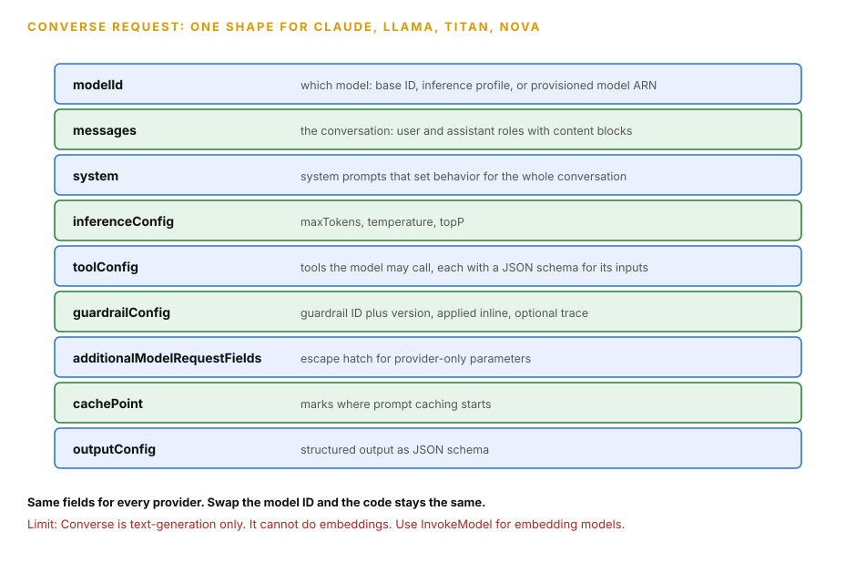
How to read this diagram
- modelId names the model: a base ID, an inference profile, or a provisioned model ARN.
- messages carries the conversation as user and assistant roles with content blocks.
- system holds the system prompts that set behavior for the whole conversation.
- inferenceConfig carries maxTokens, temperature, and topP.
- toolConfig defines the tools the model may call, each with a JSON schema for its inputs.
- guardrailConfig applies a guardrail inline by ID plus version, with an optional trace.
- additionalModelRequestFields is the escape hatch for provider-only parameters Converse does not natively support.
- cachePoint marks where prompt caching starts. outputConfig requests structured output as a JSON schema.
- Swap the model ID and the code stays the same. That is the whole point of the unified API.
- Limit in red: Converse cannot do embeddings. Embedding models are called through InvokeModel.
2. InvokeModel, provider specifics, and prompt caching
Why this comes next. Chapter 1 gave you the unified door, Converse. It left a gap. Converse cannot express everything. Provider-specific features, embeddings, and legacy code need the raw door. This chapter covers InvokeModel, provider bodies, and prompt caching.

InvokeModel (and InvokeModelWithResponseStream) calls a model. It uses the provider's native request body. Claude needs anthropic_version: "bedrock-2023-05-31" and max_tokens. Llama, Titan, Mistral, and Cohere each have their own shapes.
A wrong body returns ValidationException or a malformed-input error. This is the only Bedrock API that can generate embeddings. These are vectors for search. It uses embedding models like Titan Text Embeddings v2 or Cohere Embed.
An embedding is a list of numbers. It captures a text's meaning. Texts with similar meaning get similar numbers. So, searching by meaning is searching for nearby numbers.

How to read this diagram
- Read the three text boxes on the left. There are two password questions phrased differently. There is one refund question.
- Follow each into the embedding model. Text becomes a list of numbers. This is 1,024 numbers for Titan Embed.
- In vector space, the two password texts are close together. The refund text is far away. Closeness means similar meaning.
- The main point is the mechanism behind retrieval. A question's numbers are compared against every chunk's numbers. The nearest chunks win.
Embeddings are the first job InvokeModel does that Converse cannot. The second is about cost: when the same long prefix repeats on every call, you should not pay full price for it twice.
Prompt caching reuses the computation for a repeated prompt prefix. You mark a cachePoint (Converse) or cache_control (InvokeModel). On the next call with the same prefix, Bedrock does not recompute it. It bills cached input tokens at a discount. This is supported on Claude 3.5 and newer. It is also supported on Nova models.
Minimum token thresholds apply per model. These are in the order of thousands of tokens. The cache TTL (time to live) is 5 minutes by default. A 1-hour TTL is available on supported models. A cache write costs extra one time. Reads are cheap.
These are two different problems. InvokeModel exists because providers innovate faster than any unified API. New sampling parameters, new modalities, and embeddings all appear here first. Prompt caching exists because real applications resend the same large system prompt. They resend few-shot examples or documents on every call. Recomputing a 20,000-token prefix on each of 10,000 daily calls is pure waste.
InvokeModel body: You serialize the provider's JSON yourself. The exam's classic bug is sending a Claude body to a Llama model. Or forgetting anthropic_version. The error is always a validation error. It is never a model-quality problem.
Cache matching: The prefix must match exactly. It must match token for token. This is from the start of the prompt up to the cache point. One changed character in the system prompt makes the cache invalid.
Put volatile content after the cache point. This includes user questions and timestamps. Put stable content before the cache point. This includes instructions, examples, and documents.
Cache economics: The first call writes the cache. This is a write surcharge. Subsequent calls with the same prefix read it within the TTL. This costs about 10% of the input price.
This is an illustrative discount. The exact pricing changes. You need enough repeat calls within the TTL window to break even.
TTL behavior: Each cache hit extends the 5-minute TTL. Steady traffic keeps the cache warm indefinitely. Spiky traffic with gaps over 5 minutes pays a rewrite on every spike.
A support bot sends a 12,000-token system prompt on every call. This includes policy documents and 20 few-shot examples. It also sends a 200-token user question. Every call is billed in the same way.
input tokens is the number of tokens sent on one call. price per input token is the cost in dollars per token at the published price.
Worked example (illustrative). Without caching, the cost is $3 per million input tokens. This is $0.000003 each. The cost is 12,200 × $0.000003 = $0.0366 per call. With caching, the prefix is cached. This is 12,000 cached tokens at 10% price ($0.0036). Plus 200 fresh tokens ($0.0006).
This is about $0.0042 per call. This is about an 8x saving. At 50,000 calls per day, that is $1,830 versus $210 per day. The catch: if the policy documents change hourly, and traffic gaps are more than the TTL, rewrites remove the savings. A stable prefix plus steady traffic is the best case for caching.
Trap
Prompt caching versus Provisioned Throughput.
This is the exam's favorite cost pair. Caching attacks repeated-input cost. This is the same long prefix on every call. Provisioned Throughput attacks latency and throughput guarantees. This gives a steady baseline and no throttling.
Scenario says "same 15k system prompt on every call, costs rising". Then use caching. Scenario says "throttling at peak, steady baseline, latency SLA". Then use PT. Never swap them.
Common misunderstanding
Converse plus additionalModelRequestFields is not always enough.
Converse has an escape hatch for provider-specific parameters. But truly provider-native features belong on InvokeModel. These include embeddings and the newest sampling controls. When the scenario names a provider-specific feature, InvokeModel is the distractor-proof answer.
PROMPT CACHING: WHERE THE CACHE POINT GOES
WITHOUT caching (every call recomputes everything):
[system: 12,000 tokens ............][user: 200 tokens]
^^^^^^^^^^^^^^^^^^^^^^^^^^^^^^^^^^
billed full price on EVERY call
WITH caching (prefix marked once):
[system: 12,000 tokens ............][cachePoint][user: 200 tokens]
^^^^^^^^^^^^^^^^^^^^^^^^^^^^^^^^^^
cached at ~10% price on repeat calls within TTL
RULES
1. Prefix must match EXACTLY (one changed char = cache miss)
2. Stable content BEFORE the point; volatile content AFTER
3. TTL 5 min default (1 hr on supported models); each hit extends it
4. First call pays a write surcharge; needs repeat volume to win
5. Supported models only (Claude 3.5+, Nova); check per model| If you need | Use |
|---|---|
| same code, multi-provider, tools | Converse |
| embeddings | InvokeModel (only option) |
| provider-specific parameter | InvokeModel (or Converse + additionalModelRequestFields) |
| wrong body shape | ValidationException (always a request bug, not a model bug) |
Cache-point placement rules and the InvokeModel versus Converse decision table.
How to read this diagram
- The top block: without caching, the 12,000-token system prompt is billed at full price on every call. Multiply by the call volume. This shows the waste.
- The middle block: the cache point splits the prompt. Everything before the cache point is cached. It is billed at the discount rate on repeats.
- Rules 1 and 2 are engineering rules. They need an exact match. They need stable content before the point.
- Rules 3 and 4 are about economics. They cover TTL behavior. They cover the write surcharge that needs repeat volume.
- The decision table below is the exam shortcut. Embeddings always mean InvokeModel. Multi-provider tool use always means Converse.
Scenario: "Token costs are up 30% month over month. Every call resends a 15k-token product catalog." Correct: Use prompt caching. Put a cache point after the catalog. Distractors: Provisioned Throughput is the wrong lever.
This is a repeated-input cost problem. A smaller model changes quality. Scenario: "Claude-specific sampling parameter is not in Converse." Correct: Use InvokeModel with the native body.
Next: Chapter 3, Asynchronous and batch inference. Synchronous calls are handled. Now the work that nobody waits for.
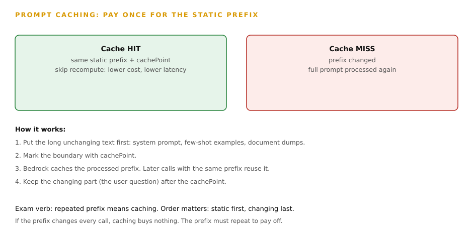
How to read this diagram
- The green box is a cache hit. Same static prefix plus a cachePoint means Bedrock skips recomputation. Lower cost and lower latency.
- The red box is a cache miss. When the prefix changes, the model processes the full prompt again.
- Step 1: put the long unchanging text first. System prompt, few-shot examples, document dumps.
- Step 2: mark the boundary with cachePoint.
- Step 3: Bedrock caches the processed prefix. Later calls with the same prefix reuse it.
- Step 4: keep the changing part, the user question, after the cachePoint.
- If the prefix changes every call, caching buys nothing. The prefix must repeat to pay off.
3. Long-running and non-interactive inference: asynchronous and batch
Why this comes next. Chapters 1 and 2 answered the synchronous question. They covered calls that wait. They did not cover calls that nobody waits for. These are nightly jobs, bulk work, and ten-minute analyses.
This chapter covers asynchronous invocation and batch inference. These use the same models. They use a different contract.

Not every model call needs an answer now. Asynchronous invocation and batch inference trade latency for cost and scale.
Asynchronous invocation: You submit a request. You get a job ID. The model processes the request in the background. You poll for completion. Or you get a notification. Use this for single requests that take minutes.
No user waits for these requests. Batch inference: You put many prompts in S3. Use JSONL. Put one request per line. Submit one batch job. Bedrock processes them over hours. It writes the results to S3.
This is about 50% cheaper than on-demand. Use this for large non-interactive workloads. Examples are nightly summarization, bulk classification, and evaluation datasets. Compare this with real-time inference (Converse, InvokeModel).
These take milliseconds to seconds. They cost full price. Use them for interactive tasks.
Interactive capacity is expensive. It must be ready instantly. If your workload can wait hours, do not pay for instant capacity. Batch jobs run on spare capacity.
This is why they cost about 50% less. Asynchronous single requests solve the problem of one slow call. A 10-minute document analysis does not need a user to wait. It should not keep an API Gateway connection open.
Batch, step by step:
- Upload input.jsonl to S3.
- Each line is a complete model request. It includes the model ID and the body.
- Call
CreateModelInvocationJobwith the input S3 URI. CallCreateModelInvocationJobwith an output S3 URI. - Bedrock adds the job to a queue. It processes the job when capacity is available. This usually happens within hours.
- You can poll the job status. You can trigger on completion by using EventBridge.
- The results go to S3 as JSONL. There is one output line for each input line. The order is the same.
- Failed lines have error records. The system does not drop them silently.
Async single: Submit one request. You will receive an invocation ARN. Poll GetAsyncInvoke or subscribe to completion events. The output goes to S3. Respect the limits.
Input file size has a cap. The maximum number of records per job has a cap. Not every model supports batch processing. Check the documentation for each model at build time.
A media company summarizes 200,000 articles per night. Each article has an average of 800 input tokens. Each article has an average of 150 output tokens. The cost per night follows one formula.
articles is the number of records processed per night. input/output tokens per article is the average number of tokens per record. input/output price is the cost in dollars per token.
The cost is Worked example (illustrative, on-demand pricing). 200,000 × (800 × $0.000003 + 150 × $0.000015) = 200,000 × ($0.0024 + $0.00225) = $930 per night. Batch processing costs about 50% less. This is about $465 per night. This saves about $170,000 per year.
Batch processing is correct because summaries are necessary by 6 AM. Instant summaries are not necessary. If editors need summaries in less than 10 seconds, batch processing is not correct. This is true even with the cost savings.
Walk through the code below. The code submits a batch inference job with boto3. It pairs with the sync/async decision diagram above. Read it in three steps.
Build the control-plane client. Batch jobs are managed resources. So, they live on "bedrock." They do not live on "bedrock-runtime." Call create_model_invocation_job with the model ARN, the S3 input URI, and the S3 output URI. Then, poll the job status until it completes.
import boto3, time
# WHAT: the Bedrock CONTROL-PLANE client. Batch jobs are managed resources
# (create, poll, stop), so they live on "bedrock", not "bedrock-runtime".
# WHAT BREAKS: "bedrock-runtime" has no create_model_invocation_job method.
client = boto3.client("bedrock", region_name="us-east-1")
# WHAT: submit the batch job.
# WHY each field:
# - jobName: your label. Useful when dozens of nightly jobs pile up.
# - modelId: the model that runs every record. Not every model supports
# batch. Check per model at build time.
# - inputDataConfig.s3InputDataConfig.s3Uri: the JSONL file in S3, one
# complete model request per line (model ID plus body per line).
# - outputDataConfig.s3OutputDataConfig.s3Uri: where Bedrock writes results.
# One output JSONL line per input line, in the same order.
# WHAT BREAKS: input lines must each be a complete valid request. One malformed
# line does not fail the job; it produces an error record for that line.
job = client.create_model_invocation_job(
jobName="nightly-summaries",
modelId="arn:aws:bedrock:us-east-1::foundation-model/anthropic.claude-haiku-4-5-20251001-v1:0",
inputDataConfig={"s3InputDataConfig": {"s3Uri": "s3://my-bucket/batch/input.jsonl"}},
outputDataConfig={"s3OutputDataConfig": {"s3Uri": "s3://my-bucket/batch/output/"}},
)
job_arn = job["jobArn"]
# WHAT: poll until done. Bedrock also emits EventBridge events on completion,
# which is the production pattern (no polling loop).
# WHY the statuses: Submitted and InProgress mean wait. Completed means results
# are in S3. Failed, Stopped, or PartiallyCompleted mean check the output for
# error records. PartiallyCompleted is the trap: some lines succeeded.
while True:
status = client.get_model_invocation_job(jobIdentifier=job_arn)["status"]
if status not in ("Submitted", "InProgress"):
break
time.sleep(60)
print("batch job finished with status:", status)
For a single slow request, the async pattern is the same idea. It is at a smaller scale. start_async_invoke on the runtime client returns an invocation ARN. The result lands in S3. This is the exam distinction.
Batch is many prompts from S3. Async is one slow prompt that nobody waits on. Streaming is tokens to a waiting user.
Trap
Batch is not a latency tool.
The exam offers batch inference for "sub-3-second responses" as a distractor. Batch latency is measured in hours. This is the decision rule. Interactive and fast means real-time.
Add Provisioned Throughput for guarantees. Non-interactive and hours-OK means batch. The scenario's latency sentence decides. The cost sentence does not decide.
Common misunderstanding
Async invocation is not streaming.
Streaming delivers tokens to a waiting user in real time. Async delivers a complete result later to storage. "User watches the answer appear" is streaming. Use ConverseStream and WebSockets. "Job runs for 10 minutes, nobody waits" is async.
INFERENCE LATENCY LADDER (pick by the latency sentence)
REAL-TIME (Converse / InvokeModel)
latency: ms to seconds | price: full
use: chat, copilots, anything a human waits on
ASYNC SINGLE (submit -> poll -> S3 result)
latency: minutes | price: near on-demand
use: one slow job, nobody waiting (10-min doc analysis)
BATCH (S3 JSONL in -> hours -> S3 JSONL out)
latency: hours | price: ~50% off on-demand
use: nightly summarization, bulk classification, eval datasets
BATCH JOB FLOW
s3://in/input.jsonl ──> CreateModelInvocationJob ──> [queue, hours]
(one request |
per line) v
s3://out/results.jsonl
(same order, errors
as records, not drops)
completion signal: poll job status or EventBridge event
DECISION RULE: "needed by 6 AM" -> batch. "needed in 10s" -> real-time.
This is the inference latency ladder. This is the batch job flow with its completion signal.
How to read this diagram
- The ladder at the top is the decision tool. Read the scenario's latency sentence. Then, pick the rung. Hours-OK goes to batch. A waiting human goes to real-time.
- The batch flow below shows the mechanics. JSONL goes into S3. There is one job submission. There are hours of processing. JSONL results go back into S3.
- Note the completion signal. You poll or listen for an EventBridge event. Batch never keeps a connection open.
- The decision rule at the bottom is the exam shortcut. It is in one line.
Scenario: Summarize 2 million support tickets nightly for a morning report. Minimize the cost. Correct solution: Use batch inference. Use S3 for input and output. Use EventBridge on completion.
Distractors: Do not use real-time Converse in a Lambda loop. This has full price and timeout chaos. Do not use Provisioned Throughput. This is a capacity guarantee. This is not a bulk discount.
Scenario: Do one 10-minute analysis per upload. The user does not wait. Correct solution: Use async invocation with S3 output and polling.
Next: Chapter 4, Prompt management. The call contracts are settled. Now, the prompt itself becomes an engineered artifact.
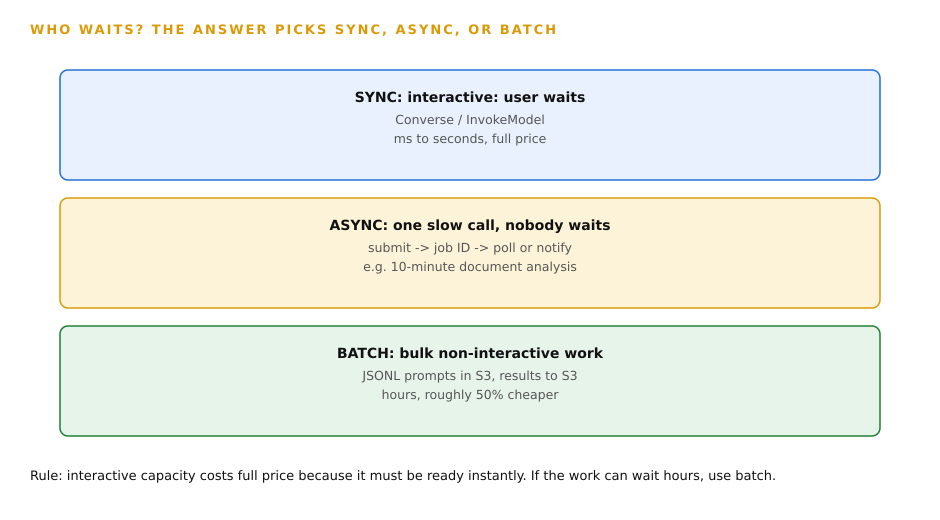
How to read this diagram
- SYNC is interactive. Converse or InvokeModel, milliseconds to seconds, full price. A user waits for the answer.
- ASYNC is one slow call with nobody waiting. Submit the request, get a job ID, poll for completion or get notified. A ten-minute document analysis fits here.
- BATCH is bulk non-interactive work. Many prompts as JSONL in S3, Bedrock processes them over hours, results land in S3. Roughly 50 percent cheaper.
- Typical batch workloads: nightly summarization, bulk classification, evaluation datasets.
- Rule: interactive capacity costs full price because it must be ready instantly. If the work can wait hours, use batch.
4. Prompt management: engineering discipline for prompts
Why this comes next. Inference mechanics are settled. These are sync, streaming, async, and batch. Now, the input itself becomes the engineering object. Prompts are code. This chapter gives them versions, variants, and discipline.
Prompts are code. Prompt Management gives them versions, variants, and variables. So, marketing can change tone without an engineering deploy.
Bedrock Prompt Management stores prompts as managed AWS resources. It does not store them as strings in application code.
Variables: {{variable}} placeholders are filled at runtime. Examples are customer name and ticket text. Variants: These are alternate versions of a prompt. Use them for A/B testing. Examples are formal tone versus friendly tone. Versions: These are immutable snapshots. You edit a draft.
Then, you publish a version. Rollback means to point at an older version. There is no extra charge. You pay only for the model tokens that the prompt generates.
Prompt Flows (the visual builder) chains prompts into multi-step workflows. It uses conditions. This builds prompt-centric logic without code.
Prompt engineering is the craft itself. This includes system prompts, few-shot examples, chain-of-thought, and structured output.
Fifteen prompts across five features is a failure mode. Marketing rewrites tone weekly. Engineers redeploy for every wording change. Prompt Management separates the wording from the code. Non-engineers edit prompts in the console.
Engineers call them by name and version. Changes ship without deploys. Experiments run as variants. Every production prompt has an immutable version. You can audit and roll back this version.
This is the prompt lifecycle, in order:
- Create a prompt resource. Give it a name. Give it a default variant. Give it
{{variables}}. - Call it from your application. Use GetPrompt. Or reference it in a Flow or agent. Use the prompt name, version, and variable values. Bedrock renders the template. Variables are substituted. Then, the rendered text goes to the model. This is exactly as if you hardcoded it.
- Test a new tone by creating a variant. Split the traffic.
- Ship it by publishing a new version. Update the alias.
- Revert by pointing back at the old version.
There are no code changes at any step. Governance is included. CloudTrail logs every prompt retrieval for audit. CloudWatch tracks which version serves traffic for regression detection. Approval workflows control publishing.
A support application has 15 prompts. Marketing changes the greeting tone three times per month. If hardcoded, this means three deploys per month. Each deploy has a two-hour change window. Each deploy has a regression risk.
This is six engineering hours each month. If managed, marketing edits the draft variant in the console. It runs 100 test conversations against a golden set. It publishes version 7. This means zero deploys.
This means zero engineering hours. It has a full audit trail. The exam often uses this exact situation. "Frequent non-engineer changes, no redeploys" is always Prompt Management.
Trap
Variants versus versions.
Variants are for A/B comparison. For example, which tone converts better? Versions are immutable releases. For example, what is in production now?
The exam asks "test two tones side by side." This means variants. It asks "roll back yesterday's change." This means versions. It offers the other term as a distractor.
Common misunderstanding
Prompt Management is not prompt caching.
Management organizes prompts. It handles versions, variants, and no redeploys. Caching makes repeated prompts cheaper (Chapter 2). They work together.
A managed prompt with a stable prefix is the best candidate for caching. The exam tests them in different scenarios. Change-frequency points to Management. Repeated-cost points to caching.
PROMPT LIFECYCLE (no redeploys)
draft --edit--> draft --publish--> VERSION 7 (immutable)
|
+---------------------+------------------+
| | |
variant A variant B VERSION 6
"formal" "friendly" (rollback target)
| |
+---- A/B test --------+
|
winner -> new default
|
app calls GetPrompt(name,
version=7, variables={...})
|
rendered -> model (tokens billed
as usual, prompt free)
GOVERNANCE: CloudTrail (who fetched what) + CloudWatch
(which version serves) + approval gate before publish
This is the prompt lifecycle. It goes from draft to immutable version. It has variants for testing. It has versions for rollback.
How to read this diagram
- Read from left to right. You edit drafts freely. Then, you publish them as an immutable version. Published versions never change.
- The branch shows variants A and B under test. They are side by side. The winner becomes the default.
- Version 6 stays below. It is the rollback target. Reverting is a pointer change. It is not a code change.
- The application call at the bottom shows the runtime pattern. Fetch by name and version. Fill variables. Render the prompt. Send it to the model.
- The governance line is the audit story. It shows who fetched what. It shows which version serves. It shows who approved the publish.
Scenario: There are 15 prompts across features. Marketing changes the tone weekly. You cannot redeploy the software. Correct solution: Use Prompt Management with versions and variants. Distractor: Do not hardcode prompts with a config file in the repository.
This still needs a deploy to make a change. Do not use Bedrock Agents. Agents are for dynamic tool use. Agents are not for prompt versioning. Scenario: Analysts build a three-stage prompt chain with branching.
Correct solution: Use Prompt Flows. Distractor: Do not use Step Functions. Step Functions are correct for approvals and waits. Step Functions are not correct for no-code prompt chains.
Next: Chapter 5, Knowledge Bases. Prompts carry instructions. Now, learn the facts behind them. This is grounding answers in your documents.
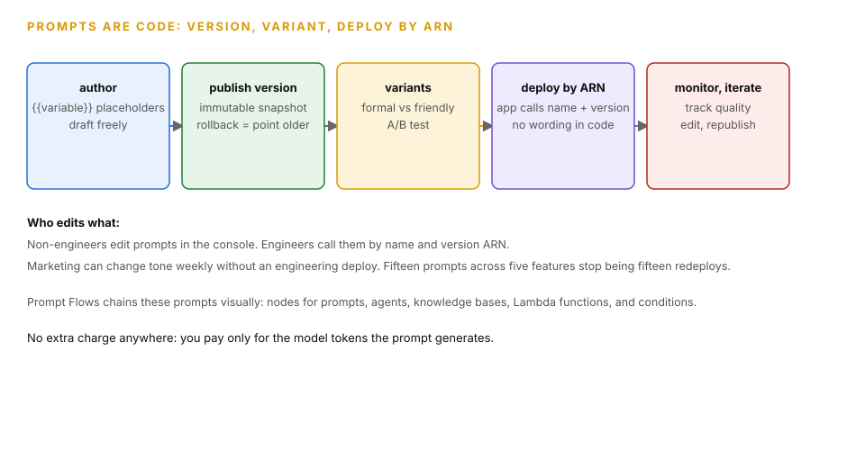
How to read this diagram
- Author the prompt with {{variable}} placeholders and draft freely.
- Publish a version to freeze it. Versions are immutable. Rollback means pointing at an older version.
- Create variants for A/B testing, such as formal versus friendly tone.
- Deploy by version ARN. The app calls the prompt by name and version. Wording lives outside the code.
- Monitor quality and iterate: edit, republish, promote.
- Who edits what: non-engineers edit prompts in the console, engineers call them by ARN. Marketing can change tone weekly without a deploy.
- No extra charge anywhere: you pay only for the model tokens the prompt generates.
5. Knowledge Bases: grounding answers in your documents
As you learned in D1, chunking and embeddings turn documents into vectors. Knowledge Bases runs that pipeline for you.
Why this comes next. You can call the model. You can version your prompts. But the model's knowledge still ends at its training cutoff. Your private documents are not visible to it. This chapter answers where facts come from. They come from Knowledge Bases, the grounding layer.
A model only knows what it learned in training. Your users ask about your documents. Retrieval is the connection between the two.
Training has a cutoff. It knows nothing private. When answers must come from your documents, there are three options. Fine-tune the model on the documents. This is slow and expensive. It becomes old the day a document changes.
Paste the documents into the prompt. This works for one page. It fails for ten thousand pages. This is because prompts have size limits. Every call re-pays for the tokens. The pasted copy becomes old.
Retrieve at query time. Fetch only the relevant passages when the user asks the question. This is fresh. You pay per query. There is no retraining. For "answers must come from our documents," the exam's answer is almost always retrieval.
Retrieval means to find the passages in your documents that are important for a question. Do this when the user asks the question. RAG (retrieval-augmented generation) means to retrieve first, then generate. The system pastes the retrieved passages into the model's prompt. So, the answer is based on your data. The order is fixed. It is always retrieve, then generate.
Keyword search is not enough for this. "How do I reset my password" and "change my credentials" have almost no common words. But they mean the same thing. Keyword search misses the second phrasing.
Meaning-based search finds it. Meaning-based search runs on embeddings (Chapter 2). Similar meanings produce similar numbers. So, "find the relevant passages" becomes "find the nearest numbers."
Chunking means to split documents into small passages. Do this before you embed them. There are two reasons. First, an embedding captures one passage's meaning well. It captures a whole manual's meaning badly.
Second, only the relevant passages must enter the prompt. The whole library must not enter the prompt. A typical chunk is a few hundred tokens. There is overlap between neighbors. This prevents cutting a sentence in half.
A vector store is a database. It holds the embeddings. It finds the nearest embeddings to a query vector. It does this fast and at scale.
The system stores each chunk's text next to its vector. It also stores source metadata. This metadata includes the document name and page. This allows answers to cite their sources.

How to read this diagram
- Start at the diamond. The question is which vector store backs the knowledge base.
- Each branch matches an operations reality. These realities are managed AWS-native, existing Postgres, cost-first, or cross-cloud.
- The exam default is OpenSearch Serverless. It is managed. It scales to zero. It handles filters and vectors.
- The brand is not the main point. The vector store is a separate choice. The embedding model is a separate choice. The chunking strategy is a separate choice.
The pipeline has two phases. Ingest runs offline. It runs when documents change. Documents go in. Chunks come out. Embed each chunk. Store the vectors, the text, and the metadata. Query runs online.
It runs for each question. Embed the question. Vector-search the top-k nearest chunks. Build the prompt. The prompt includes the question, the chunks, and an instruction to cite sources. The model answers with citations.

How to read this diagram
- Read the top row from left to right. Documents from S3, the web, or databases go into Bedrock Knowledge Bases. The Knowledge Base chunks the documents. It embeds the chunks into the vector store. This is ingest. It runs offline.
- Read the bottom row. The user question is embedded. The system matches the question against the same vector store. This is a query. It runs for each question.
- The output is top-k retrieval with citations. This includes chunks plus source metadata. It is ready to paste into a prompt.
- The shape to memorize is the split. There is one offline write path. There is one online read path. There is one shared vector store.
Amazon Bedrock Knowledge Bases is the managed version of both phases. You point it at a data source. This is usually an S3 bucket. You select a chunking strategy (fixed-size, hierarchical, semantic) and an embedding model.
It syncs on a schedule. New files in S3 become searchable with no code. This is the exam's default answer for "ground answers in our documents."
There are two query APIs. RetrieveAndGenerate: This is one managed call. Bedrock retrieves, builds the prompt, generates, and returns the answer with citations. Retrieve: This returns only the chunks. You build the prompt and call Converse yourself. Choose Retrieve when you need control. This includes your own reranking step, a custom prompt template, or a strict citation format that the managed call does not offer.
Four controls determine retrieval quality. Top-k: This is how many chunks return. Too few chunks starves the answer. Too many chunks dilutes it with noise. Score threshold: This drops weak matches below a similarity floor. Metadata filters: This restricts the search to one team's documents or one date range. Reranking: This is a second pass. It re-orders the candidates by relevance.
Retrieval quality determines the answer. Irrelevant chunks result in confident but wrong answers. When answers are wrong, fix chunking and embeddings first. A bigger model that reads the wrong passages just writes wrong answers more fluently.
top_k is the chunks retrieved per query. tokens per chunk is the tokens in each retrieved chunk. input price is the dollars per input token.
A support corpus holds 8,000 articles. Each article averages 600 tokens. This is 4.8 million tokens of source. It is chunked at 300 tokens with overlap. This is about 20,000 chunks. Each chunk becomes a 1,024-number vector.
One query embeds the question. This is a small call. It retrieves the top 5 chunks. This is about 1,500 tokens of context. It generates a 250-token cited answer.
Grounding adds about 1,750 input tokens per call. This costs about half a cent per grounded answer at an example rate of $3 per million input tokens. Fine-tuning the same knowledge would cost much more. It would also become stale on the next document update.
Trap
A bigger model does not fix bad retrieval.
Retrieval is upstream of generation. If the trace shows irrelevant chunks, fix the chunking strategy. Fix the embedding model and top-k. A bigger model cannot rescue passages that were never retrieved. The exam describes this as "answers are confident but wrong." The trace shows off-topic chunks.
Common misunderstanding.
RAG does not train the model.
The model's weights never change. Documents are read at query time. This is why a Knowledge Base sync updates answers in minutes with no retraining. "Teach the model our documents" means retrieval. "Change the model's weights" means fine-tuning. Fine-tuning is in Domain 1.

How to read this diagram.
- Read from left to right in two lanes. The top lane is ingest. Documents are in S3. They are chunked and embedded. They go into the vector store. It runs on a schedule.
- The bottom lane is the query. The user query retrieves the top-k chunks from the same store.
- Both lanes meet at the Converse API. The Converse API receives the question plus the retrieved context. It produces the cited answer.
- This picture shows the full pattern that the Knowledge Base chapter teaches. Ingest once. Retrieve per question. Generate with citations.
THE TWO-PHASE RAG PIPELINE
INGEST (offline: runs when documents change)
documents --> [chunk: ~300 tokens, overlap] --> [embed each chunk]
--> vector store (vector + text + source metadata)
QUERY (online: runs per question)
user question --> [embed question] --> vector search (top-k)
--> prompt: question + chunks + "cite your sources"
--> model --> cited answer
BEDROCK KNOWLEDGE BASES = managed ingest + managed query
data source: S3 (sync schedule) | chunking: fixed / hierarchical
/ semantic | query: RetrieveAndGenerate (managed) or
Retrieve (you build the prompt)
QUALITY LADDER (fix in this order when answers are wrong)
1. chunking strategy 2. embedding model 3. top-k / threshold
4. reranking 5. generation model (LAST, rarely the fix)
This is the two-phase RAG pipeline. It includes offline ingest and online query. It also includes the quality ladder for debugging bad answers.
How to read this diagram.
- The top block is ingest. Read it as a factory line. It runs whenever documents change. Documents become chunks. Chunks become vectors. Vectors land in the store with their text and metadata.
- The middle block is the query. It runs one time per question. The question is embedded. The nearest chunks are found. They join the prompt before generation.
- The Bedrock line maps the managed service onto the pipeline. S3 is the data source. You choose the chunking method. There are two query APIs.
- The quality ladder at the bottom is the debugging order. Chunking is first. The generation model is last. Memorize this order. It answers the "confident but wrong" questions.
For each component: what it means and what breaks.
| Component | Meaning | If it breaks |
|---|---|---|
| Chunking strategy | How documents are split. | Oversized chunks dilute meaning. Tiny chunks lose context. |
| Embedding model | Text to meaning-vectors. | Weak embeddings cluster unrelated passages together. |
| Vector store | Nearest-vector lookup. | A slow or stale index. New documents are not searchable. |
| Top-k and threshold | The number of chunks and their quality. | Too few chunks starves the answer. Too many chunks adds noise. |
| Retrieve versus RetrieveAndGenerate. | Control over the prompt. | A managed call cannot do custom reranking or citation formats. |
Consider this scenario: "Support answers must cite the current policy library. The library updates weekly." The correct solution is a Knowledge Base with an S3 data source. It needs a sync schedule and RetrieveAndGenerate with citations. Incorrect solutions include weekly fine-tuning. This is slow, expensive, and stale between runs.
Another incorrect solution is pasting the library into the system prompt. This uses many tokens on every call and creates stale copies. A bigger model is also incorrect. It would still not see the private documents.
Next: Chapter 6, Bedrock Agents. Answers are grounded. Now we discuss actions: the anatomy of an agent.
6. Bedrock Agents: Anatomy of an Agent
As you learned in D1, a foundation model takes a prompt and returns a completion. An agent wraps that loop with tools, memory, and a plan.
Why this comes next. Knowledge Bases let the model answer from your documents. They do not let it act. They do not allow API calls. They do not allow database writes.
They do not allow multi-step plans. This chapter introduces the action dimension. This is the anatomy of a Bedrock Agent.
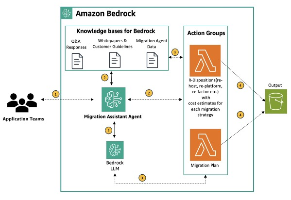

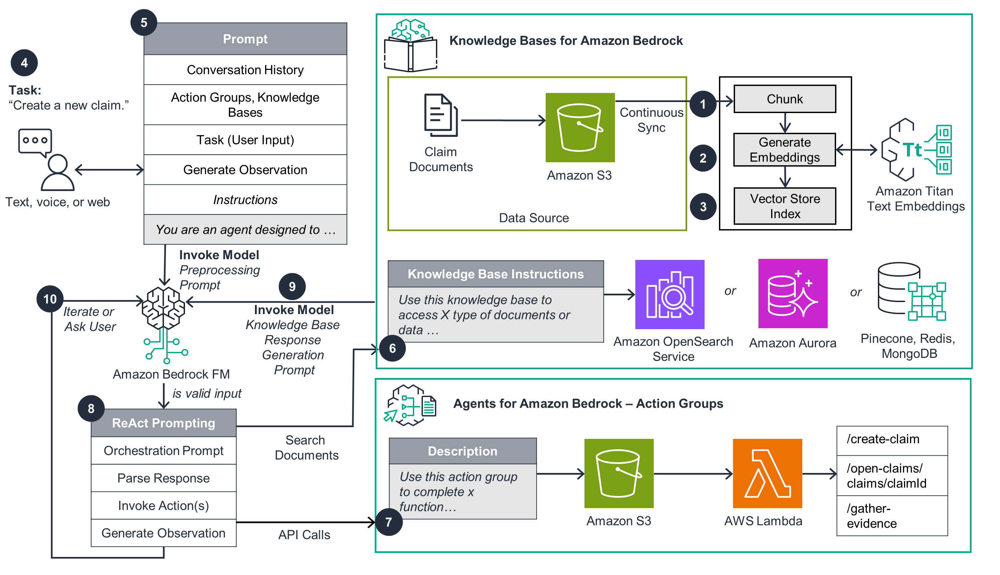
An agent is a Foundation Model. It includes instructions, tools, and memory. Bedrock Agents is the managed way to build an agent.
A foundation model (FM) is a large AI model. It is trained on broad data. You access it through an API. Amazon Bedrock is the managed service that hosts Foundation Models. A Bedrock Agent adds four things to a Foundation Model. It adds an agent instruction.
This is a system-level prompt that tells the agent its role and how to behave. It adds action groups. These are the tools the agent can call. Each action group runs code in a Lambda function or calls an external API described by an OpenAPI schema. It adds a knowledge base (KB). This is attached retrieval.
It makes your documents searchable. Chapter 5 covers this. It adds guardrails. These are safety filters applied to inputs and outputs.
Each agent also has an IAM role. IAM (Identity and Access Management) is how AWS controls permissions. The agent's role must grant permission to call the Foundation Model. It must also grant permission to call the Lambda functions behind its action groups and its Knowledge Base.
A bare model can only answer from its training. A support bot must look up order status in a database. An HR bot must read policy documents and then file a ticket. Without agents, you build the reasoning loop manually. You send a prompt. You parse tool calls.
You execute them. You feed results back. You repeat this process. Bedrock Agents manages that loop for you. This includes session memory across turns.
This is the sequence when a user sends a message:
- Your application calls
invoke_agenton the bedrock-agent-runtime API. It uses anagentId, anagentAliasId, and asessionId. - The agent adds the agent instruction and the conversation history for that
sessionId. It asks the Foundation Model: what is the next step? - The Foundation Model reasons. It returns either an answer or a tool call. This is the ReAct pattern: reason, then act.
- The agent invokes the matching action group for a tool call. The action group executor is a Lambda function or an API schema. Lambda runs and returns JSON.
- The agent feeds the tool result back to the Foundation Model. It repeats this process until it has a final answer.
- The final answer streams or returns to the user. The session state is kept. The next turn remembers the current turn.
Three lifecycle concepts are important for the exam. Prepare agent: You must run prepare-agent after any configuration change. This includes a new action group or a new instruction. This compiles your changes from DRAFT to PREPARED. If you skip this, the agent silently runs the old configuration. Alias: This is a named pointer to a prepared version. It is like a tag.
Production traffic uses an alias (for example, PROD). It never uses DRAFT. enableTrace: This is a flag on invoke_agent. It returns the agent's reasoning trace. This trace shows which tools the agent chose and why. This is the exam's transparency answer.
This walkthrough shows how to start an agent turn. The code below uses boto3 (the AWS SDK for Python). It pairs with the orchestration diagram above. Read it in three steps.
First, build the agent-runtime client. Then, call invoke_agent with the agent ID, the alias ID, a session ID, and the user's text. Then, read the streamed response events and print the final text.
import boto3
# WHAT: the Bedrock agent-runtime client. invoke_agent lives here, not on
# "bedrock" (control plane) or "bedrock-runtime" (model invocation).
# WHAT BREAKS: wrong client means no invoke_agent method at all.
client = boto3.client("bedrock-agent-runtime", region_name="us-east-1")
# WHAT: start one agent turn.
# WHY each field:
# - agentId: which agent. agentAliasId: which prepared VERSION of it.
# Production uses an alias (PROD), never DRAFT. The alias pins the version.
# - sessionId: the conversation memory key. Same sessionId continues the
# conversation; a new one starts fresh with no history.
# - inputText: the user message for this turn.
# - enableTrace: True returns the reasoning trace (which tools the agent
# considered and why). The exam's transparency answer. Costs extra tokens.
# WHAT BREAKS: calling DRAFT in production means untested config serves users.
# Reusing one sessionId across users leaks conversation history between them.
response = client.invoke_agent(
agentId="ab-agent123",
agentAliasId="PROD",
sessionId="user-42-session-7",
inputText="Where is my order #12345?",
enableTrace=True,
)
# WHAT: reading the answer. invoke_agent returns an EVENT STREAM, not a dict.
# response["completion"] yields events: "chunk" (answer text pieces), "trace"
# (reasoning steps, only with enableTrace), and file events.
# WHY the loop: chunks arrive as they generate. Concatenate them for the full
# answer. For a chat UI, yield each chunk to the browser as it arrives.
# WHAT BREAKS: treating response["completion"] as a string raises TypeError.
# It is a stream. You must iterate it.
answer = []
for event in response["completion"]:
if "chunk" in event:
answer.append(event["chunk"]["bytes"].decode("utf-8"))
print("".join(answer))
The exam tests this structure. invoke_agent takes agentId, agentAliasId, sessionId, and inputText. It returns a stream that you iterate. The session ID is the memory key. The alias is the version pin.
An order-status agent has 3 action groups. These are LookupOrder, RefundOrder, and SearchPolicies. It attaches one Knowledge Base (the returns policy) and one guardrail. You change the agent instruction to stop offering refunds over $500. First, edit the instruction.
Then, run prepare-agent. This takes about 1 to 3 minutes. Next, test against DRAFT. Then, point the PROD alias at the new prepared version. The agent keeps the full session in memory during a 10-turn conversation.
Idle sessions expire after 600 seconds (10 minutes). This is the documented default. The sessions expire unless you continue to invoke them.
This is an example of cost calculation. Each user turn uses an average of 3 agent steps. Each step uses about 1,500 input tokens and 300 output tokens. One turn costs:
steps is the agent loop iterations per turn. input/output tokens per step is the average tokens per step. input/output price is the dollars per token.
Worked example. costs $3 per million input tokens. It costs $15 per million output tokens. The cost is 4,500 × $0.000003 + 900 × $0.000015. This equals $0.0135 + $0.0135. The cost is about $0.027 per turn.
The cost is about $2,700 per month for 100,000 turns. This cost is before any Lambda or Knowledge Base charges. Agent loops increase token use. This is why cost questions relate to agents.
Trap
The agent ignores the new action group bug.
The exam's common agent bug is forgetting prepare-agent after a change. The configuration looks correct in the console. However, the agent runs the old DRAFT. The fix is always to prepare the agent and then test it. The exam describes this as "the agent behaves as if the new tool does not exist."
Common misunderstanding.
An agent is not a chatbot.
A chatbot maps one question to one answer. An agent plans. It can call three tools in a row. It can decide the order itself.
It can change the plan when a tool fails. If the scenario says "fixed prompt chain" or "deterministic steps," the answer is Prompt Flows or Step Functions. It is not an agent. Agents are for dynamic, tool-using reasoning.
BEDROCK AGENT REQUEST LOOP
--------------------------
User app Bedrock Agent FM
| | |
| invoke_agent(sessionId=abc) | |
|----------------------------------->| |
| | "next step?" + history |
| |------------------------------>|
| |<----- tool call: LookupOrder--|
| | |
| +------------------------------+ |
| | Action group: Lambda executor | |
| | runs code, returns JSON | |
| +------------------------------+ |
| | tool result |
| |------------------------------>|
| |<----- final answer ------------|
|<--------- answer -------------------| |
prepare-agent: DRAFT -> PREPARED (run after EVERY config change)
alias: PROD points at a prepared version (traffic goes here, never DRAFT)
enableTrace: returns the reasoning trace for transparency/debugging
The Bedrock Agent orchestration loop: The agent alternates between the FM (reasoning) and action groups (acting). It does this until it reaches a final answer. Session memory is keyed by sessionId.
How to read this diagram
- Start at the top left. The user app calls
invoke_agentwith asessionId. The session ID gives the agent memory across turns. - Trace right. The agent builds a prompt from the instruction plus history. It asks the FM what to do next.
- Follow the loop down. The FM returns a tool call. The action group (Lambda) executes it. The result goes back to the FM.
- The loop repeats. It repeats until the FM produces a final answer. The final answer returns to the user.
- The three notes at the bottom are the exam's favorite facts. Prepare after every change. Use aliases for production. Use
enableTracefor transparency.
Per component: what it means, what breaks.
| Component | Meaning | If it breaks |
|---|---|---|
| sessionId | Conversation memory key. | No memory across turns. Every call starts fresh. |
| Action group | Tool the agent can invoke. | Agent cannot act. Answers degrade to guesses. |
| prepare-agent | Compiles DRAFT to PREPARED. | Configuration changes are silently ignored. This is a classic exam bug. |
| Alias | Stable production pointer. | Traffic hits DRAFT. It changes unexpectedly. |

Read this diagram. It is a vendor overview graphic.
It is not a precise schematic. Treat it as a map of which services cluster around a production agent.Per component: what it means, what breaks.
| Component | Meaning | If it breaks |
|---|---|---|
| Lambda | Tool execution | Agent cannot act on real systems. |
| DynamoDB | Session and state storage. | No memory across turns. |
| Knowledge Base | Grounded documents | Answers hallucinate |
| API Gateway | Stable client endpoint. | Clients couple to internals. |
Scenario: "The company updated the agent's instruction but the agent behaves as before." The correct answer is to run prepare-agent. Then republish the alias. Do not increase the Lambda memory. This is a distractor.
Another scenario is: "An agent must call internal APIs and answer from policy documents." The correct answer is a Bedrock Agent. It has action groups. It has an attached KB.A distractor is a single Converse call with a long prompt.
Next: Chapter 7, Multi-agent collaboration. One agent is understood. Now specialist agents are under a supervisor.
7. Multi-agent collaboration: supervisor, collaborators, and open frameworks
Why this comes next. One agent can reason. It can use tools. It can remember. It cannot be an expert in everything.
One agent with forty tools confuses itself. This chapter answers the scale question. It uses specialist agents coordinated by a supervisor.
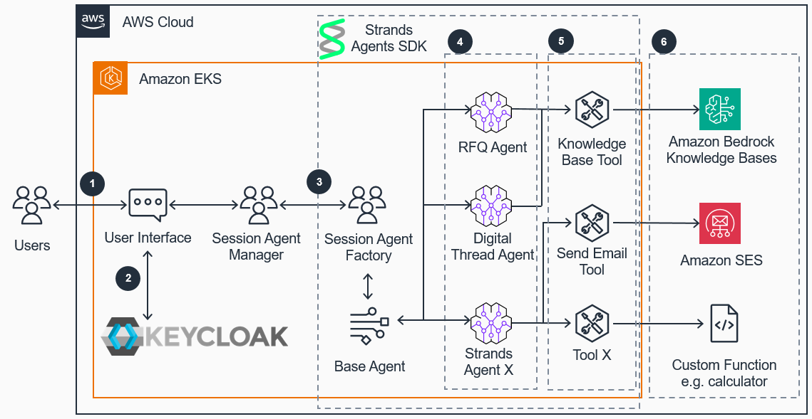
In Bedrock Agents, multi-agent collaboration lets one supervisor agent delegate to collaborator agents. The supervisor does not call the collaborators through action groups. It uses a built-in mechanism. The supervisor's instruction names the collaborators. Bedrock routes subtasks to them automatically.
Each collaborator is a full agent of its own. It has its own instruction. It has its own action groups. It has its own KB.
The agent ecosystem beyond Bedrock Agents, side by side.
| Framework | What it is | Its role |
|---|---|---|
| Strands Agents | Open-source, code-first SDK for building agents. It is lightweight. You define agents in Python. The model drives the loop. | Build one agent in code. |
| AWS Agent Squad | Open-source multi-agent orchestration framework. It routes user requests to the correct specialist agent. It keeps context across them. | Orchestrate several agents. |
| MCP (Model Context Protocol) | Open standard for how agents talk to tools. An MCP server exposes tools. An MCP client (the agent) calls them. On AWS, lightweight MCP servers run on Lambda. Complex ones run on ECS (Elastic Container Service). | Standardize the tool interface. |
| AgentCore | The newer managed agent platform: Runtime (host agents built in any framework), Gateway (expose tools as MCP endpoints with credential handling), Memory (short and long term agent memory), Identity, and Observability. | The migration path from Bedrock Agents when you want framework freedom. |
Specialists beat generalists. A wealth-management assistant needs tax law. It needs investment research. It needs estate planning. One agent with 40 tools gets confused about which tool to use.
Three specialist agents with 8 tools each are accurate. A supervisor coordinates them. The exam's canonical scenario is exactly this. "Specialist agents for tax, investments, and estate must collaborate. They must use tools.
They must keep memory for weeks. They must get human approval over $100k."This must happen before the supervisor can use it. A DRAFT collaborator cannot be delegated to. The supervisor's instruction describes each collaborator's specialty. It describes when to delegate.
On a user message, the supervisor's FM decides. It can answer directly. It can delegate a subtask to a collaborator. The collaborator runs its own agent loop. It uses its tools and its KB.
Then it returns a result to the supervisor. relay-conversation-history controls if the collaborator sees the full conversation. It controls if the collaborator sees only the subtask. Sharing everything costs tokens. Sharing nothing loses context.
The supervisor composes the final answer. For risky actions, it hands off to a human-in-the-loop step. This is typically a Step Functions callback with a task token.
A client asks: "Should I sell my rental property this year?" The supervisor delegates three subtasks. The tax agent computes capital-gains impact. This needs 3 tool calls. The investments agent models reinvestment scenarios. This needs 4 tool calls. The estate agent checks trust implications.
This needs 2 tool calls. The supervisor then requests human approval. The transaction exceeds $100k. The total is 9 collaborator tool calls plus 3 supervisor steps. Token cost scales with delegation depth. This is why the exam pairs multi-agent questions with cost constraints.
Memory math is illustrative. Each agent turn adds approximately 2,000 tokens of history. A 20-turn multi-agent session can carry 40,000 tokens of context. The model context window is 200,000 tokens.
One session fits. Two parallel delegations with full history relay can overflow it. This is why relay-conversation-history tuning is a real engineering lever. It is not trivia.
Trap
Action groups are not how agents talk to each other.
The exam will describe a supervisor "calling a collaborator through an action group." That is wrong. Action groups are agent-to-tool. Supervisor-to-collaborator uses the built-in multi-agent collaboration mechanism. Any option that wires agents together with action groups is a distractor.
Common misunderstanding
Collaborators must be prepared and aliased.
This is the same rule as Chapter 6, one level up. A supervisor cannot delegate to a DRAFT collaborator. The scenario says "the supervisor never delegates to the new agent." The fix is prepare plus alias. The fix is not more prompt engineering.

Per component: what it means, what breaks.
| Component | Meaning | If it breaks |
|---|---|---|
| Supervisor | Routes and composes | Subtasks never delegated. Single-agent bottleneck. |
| Collaborator alias | Stable pointer to prepared specialist. | DRAFT collaborator: delegation fails silently. |
| relay-conversation-history | How much context the collaborator sees. | Too much: token blowup. Too little: context loss. |
| Approval step | Human gate on risky actions. | Agent executes irreversible actions alone. |
MULTI-AGENT SUPERVISOR / COLLABORATOR
+------------------+
| SUPERVISOR agent |
| instruction: |
| "delegate tax / |
| invest / estate"|
+--------+---------+
|
+----------------+----------------+
| | |
+--------v-------+ +------v-------+ +------v-------+
| TAX collaborator| | INVESTMENTS | | ESTATE |
| alias: PROD | | collaborator | | collaborator |
| tools: tax calc | | alias: PROD | | alias: PROD |
| KB: tax code | | tools: market| | tools: trusts|
+--------+--------+ | KB: research | +------+-------+
| +------+-------+ |
+----------+------+-------+--------+
|
+--------v---------+
| Step Functions |
| human approval |
| (task token, |
| waits days) |
+------------------+
RULE: collaborators must be PREPARED + ALIASED (never DRAFT)
RULE: supervisor -> collaborator is built-in, NOT an action group
LEVER: relay-conversation-history controls token cost vs context
The supervisor/collaborator topology with the two exam rules and the cost lever.
How to read this diagram
- Read the supervisor box first. Its instruction names the three specialists. This is the delegation contract.
- Each collaborator box lists its alias. The alias is PROD, never DRAFT. Each box lists its tools. Each box lists its KB. Specialists stay narrow.
- The bottom box is the safety net. Risky actions wait on a Step Functions human approval. This can pause for days.
- The three RULE/LEVER lines are the exam payload. They are prepared plus aliased collaborators. They are built-in delegation. They are not action groups. They are history relay as the cost lever.
This is the canonical scenario: "Specialist agents for tax, investment, and estate must collaborate. They must use tools. They must keep memory for weeks. They require human approval over $100k." The correct combination is Strands plus Agent Squad for orchestration. MCP servers are for tools. DynamoDB is for weeks-long memory.
Step Functions are for the approval. Distractors are Amazon Lex. Lex is a conversational UI. Lex is not autonomous orchestration. Other distractors are a single giant prompt or action groups between agents.
Next: Chapter 8, the holy trinity. Agents collaborate. Now combine agents with Knowledge Bases and Guardrails. This is the exam's favorite stack.
8. Agents with Knowledge Bases and Guardrails: the holy trinity
Why this comes next. You know agents, knowledge bases, and guardrails as separate tools. The exam's favorite scenario combines all three. An agent acts. The agent grounds its answers. The agent stays safe. This chapter covers the holy trinity together.

A knowledge base (KB) gives the agent retrieval-augmented generation. It searches your documents. The documents are in a vector store like OpenSearch Serverless. The agent answers with citations. A guardrail is a set of safety policies.
Apply the policies to the agent's inputs. Apply the policies to the agent's outputs. You can apply them to both. There are six controls. These are content filters.
These are denied topics. These are word filters. These are sensitive information filters. These are contextual grounding checks. These are automated reasoning checks.
Tool use without grounding causes facts to hallucinate. Grounding without safety leaks PII. Grounding without safety gives disallowed advice. The trinity covers the three failure modes at once.
The agent can act with action groups. The agent knows your data with a KB. The agent stays inside policy with guardrails. The exam treats this combination as the default production agent architecture.
Inside one invoke_agent call, the agent's orchestration interleaves all three. The order is fixed.
- Input guardrail. The user message arrives and the input guardrail screens it first: blocked content stops here, before any model call.
- Grounding. The agent decides if it needs facts. If yes, it queries the attached KB. The query is embedded. The vector store returns the top chunks. Those chunks enter the FM's context with source metadata.
- Reasoning and action. The FM reasons. It can call action-group tools. This is exactly as in topic 6.
- Output guardrail. Before the final answer leaves, the output guardrail screens it. PII gets masked. Denied topics get blocked. Grounding checks verify claims against the retrieved chunks.
Traces (enableTrace) show which KB chunks were used. They show which guardrail rules fired. This is how you debug issues. You can tell if "the answer was right but got blocked." Or if "the answer was wrong but passed."
A policy assistant agent has a KB of 12,000 HR documents. Each document is chunked at about 300 tokens. This is about 3.6 million tokens of source. It has a guardrail with denied topics like "medical diagnosis." It also has PII masking for national ID numbers. A user asks about leave policy.
The KB retrieves 5 chunks. This is 1,500 tokens. The FM writes a 200-token answer. It cites two documents.
The output guardrail masked one ID number. This number appeared in a retrieved chunk. Retrieval and masking added about 1,700 tokens to the call. This is about 10 times the tokens of the answer itself. Grounding is the main token cost driver in RAG agents. This is why cost questions often use this pattern.
Trap
Guardrails do not extract content.
The exam will offer "use Bedrock Guardrails to extract key concepts from documents" as a distractor. Guardrails filter content. Extraction is Bedrock Data Automation (Chapter 15). Or it is a KB with the correct chunking. Match the tool to the action. Filter versus extract.
Common misunderstanding
Denied topics versus content filters.
Denied topics block subject areas. These areas are described in plain language. Examples are "investment advice" or "medical diagnosis." Content filters block toxicity categories. Examples are hate or violence. They block at specific severity levels.
The scenario verb decides the type. "Prevent the model from discussing X" means denied topics. "Block profanity" means content filters. The exam swaps them in distractors.
THE HOLY TRINITY: AGENT + KB + GUARDRAILS
User question
|
v
+-----+------+ INPUT guardrail screens FIRST
| GUARDRAIL |---- (prompt attack? denied topic in input?)
| (input) |
+-----+------+
|
v
+-----+------+ KB grounds the reasoning
| AGENT loop |---- Retrieve: embed query -> vector store
| (FM + | -> top chunks -> into FM context
| action | with source metadata for citations
| groups) |
+-----+------+
|
v
+-----+------+ OUTPUT guardrail screens LAST
| GUARDRAIL |---- (PII mask? toxicity? grounding check?
| (output) | denied topic in answer?)
+-----+------+
|
v
Final answer (+ citations, + trace)
DEBUG RULE: trace shows which KB chunks were used and
which guardrail rule fired. Wrong-but-passed = grounding
problem. Right-but-blocked = guardrail problem.
One invoke_agent call combines all three. It has an input guardrail screen. It has a KB-grounded agent loop. It has an output guardrail screen.
How to read this diagram
- Start at the top. The user question hits the input guardrail. This happens before any model or KB is touched. Attacks stop here.
- Move to the agent loop. When facts are necessary, the KB retrieves chunks. These chunks carry source metadata for citations.
- Move down to the output guardrail. It masks PII. It blocks denied topics. It checks grounding against the retrieved chunks.
- The debug rule at the bottom is the troubleshooting key. Use the trace to separate grounding failures from guardrail failures. Grounding failures are wrong but passed. Guardrail failures are right but blocked.
Per component: what it means, what breaks
| Component | Meaning | If it breaks |
|---|---|---|
| Input guardrail | Screens the user message | Jailbreaks and injection reach the model. |
| KB attach | Retrieves your documents | The Agent answers from training. The Agent hallucinates facts. |
| Output guardrail | Screens the final answer | PII leaks. Disallowed content ships. |
| Trace | Shows chunks used and rules fired | Cannot tell grounding errors from policy errors. |
Scenario: "A children's tutor must block bad language and violence in inputs. It must prevent harmful outputs. It must stop jailbreaks. It must base facts on the curriculum." Correct solution: Use the full defense-in-depth stack.
Use Guardrails on the agent. Use KB grounding. Distractors rely on "the base model's built-in safety." This is never the complete solution for a sensitive audience. Or they use word filters where PII filters are necessary.
Next: Chapter 9, Lambda integration patterns. The GenAI blocks are complete. Now, the compute your code runs on.
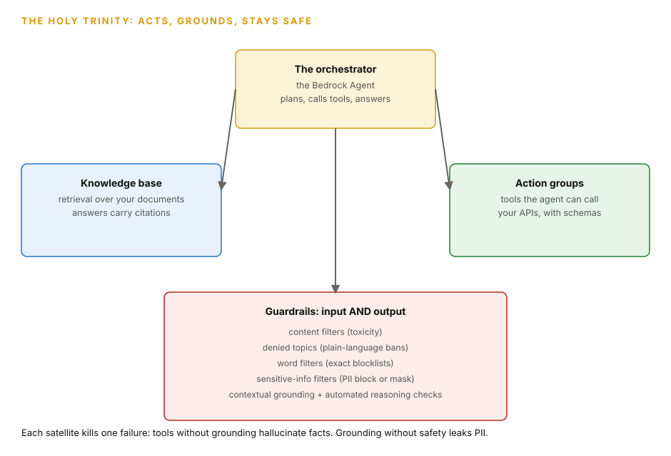
How to read this diagram
- The top box is the orchestrator: the Bedrock Agent. It plans, calls tools, and answers.
- The left box is the knowledge base. Retrieval over your documents in a vector store like OpenSearch Serverless. Answers carry citations.
- The right box is action groups. The tools the agent can call: your APIs, each with a schema.
- The bottom box is guardrails, applied to input AND output. Six controls: content filters, denied topics, word filters, sensitive-information filters, contextual grounding checks, automated reasoning checks.
- Each satellite kills one failure. Tool use without grounding hallucinates facts. Grounding without safety leaks PII.
9. Lambda integration patterns: sync, async, streaming, timeouts, concurrency
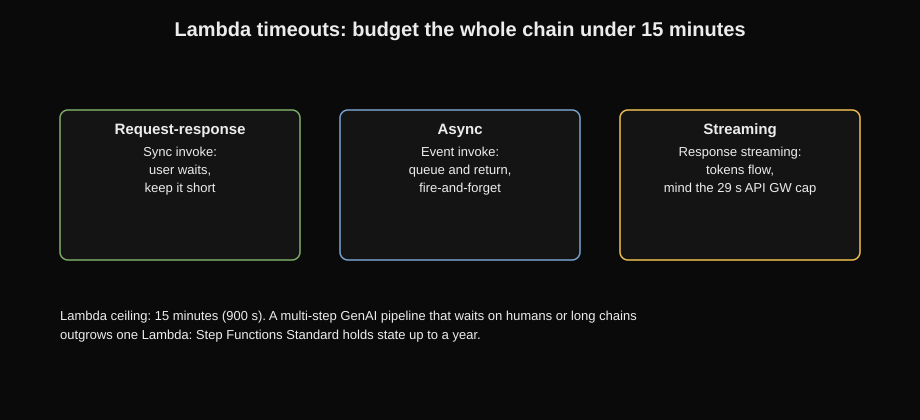
Why this comes next. The GenAI building blocks are ready. These include calls, grounding, and agents. Now, the question is about your code. Where does the connection run?
This chapter explains Lambda integration patterns. These are the invocations, timeouts, and concurrency rules. They decide if your system survives.

Lambda connects GenAI on AWS. How you invoke it decides if your application handles real traffic.
AWS Lambda runs your code without servers. You upload a function. AWS runs it when triggered. AWS bills per millisecond. Three invocation modes are important. Synchronous (RequestResponse): The caller waits for the result. Use this for APIs where the user waits for the response. Asynchronous (Event): Lambda puts the event in a queue.
It returns immediately. Use this for fire-and-forget tasks. An example is processing an uploaded file. Streaming responses: Lambda streams partial output back as it is produced. It uses ResponseStream. Use this for token-by-token model output. The user sees text appear immediately.The default regional quota is 1,000. Reserved concurrency guarantees capacity for one function. Provisioned concurrency keeps instances ready to prevent cold starts.
Model calls are slow and happen in bursts. A chat application has idle seconds. Then it has a spike of 500 users. Lambda scales to zero. It bursts on demand.
So, you pay nothing when idle. But a 15-minute limit means Lambda cannot host long waits. It cannot host approvals. It cannot host multi-hour batch jobs. Choosing the wrong invocation mode is the exam's favorite Lambda error.
Sync via API Gateway: The request thread stays open. API Gateway times out at 29 seconds for REST APIs. So, a synchronous Lambda behind it must finish. This includes the model call.
It must finish within 29 seconds. Streaming helps perceived latency. But it does not extend the hard limit.
Async: The event goes to an internal queue. Lambda retries two times on failure. Then it can send the event to a dead-letter queue (DLQ). Use SQS in front for clear control. SQS provides batching, visibility timeouts, and DLQs that you can see.
Streaming: The function writes parts to the response stream. API Gateway does not support Lambda response streaming on REST endpoints in the classic pattern. So, streaming applications typically use API Gateway WebSockets. Or they use an Application Load Balancer. Or they use Lambda function URLs.
Cold starts: The first invocation after a period of inactivity pays for container startup. This often takes 100 milliseconds to several seconds for large packages. Provisioned concurrency removes this cost. But it costs money even when idle.
For GenAI, the model call usually takes much longer than the cold start. So, provisioned concurrency is rarely the solution. It is only the solution if the scenario requires strict latency service level agreements.
A summarization API gets 10 requests per second at peak. Each model call takes 8 seconds. How many executions must run at the same time? The formula is:
requests per second is the arrival rate at peak. seconds per request is the duration of each execution.
Worked example. 10 multiplied by 8 equals 80 concurrent executions. This is less than the default of 1,000. This is acceptable. But if a Bedrock throttle slows calls to 60 seconds, the concurrency need becomes 600. This is still acceptable.
But queuing starts. If traffic increases 20 times to 200 requests per second, and each takes 60 seconds, you need 12,000 concurrent executions. This will cause throttling. The exam solution is not to increase the Lambda limit first. The solution is backpressure and asynchronous processing.
Put SQS in front. Let the queue absorb the spike. Process at a controlled rate. Tell the client to poll.
Timeout calculation: A Lambda has a 29-second API Gateway limit. It calls a model. The model streams 100 tokens per second. The answer has 3,000 tokens. This takes 30 seconds.
Synchronous processing fails. The correct pattern is asynchronous or WebSocket streaming. Return a job ID immediately. Stream tokens over the socket. Store the result in DynamoDB.
Do not use Lambda for long-running orchestration. A single Lambda cannot handle some scenarios. It cannot handle "wait for human approval." It cannot handle "pause for 2 hours." It cannot handle "runs overnight." Fifteen minutes is a hard limit. The solution is Step Functions (Chapter 11).Or the solution is batch inference (Chapter 3). The exam often hides a wait in a Lambda-like scenario.
Common misunderstanding
Streaming does not increase timeouts.
Streaming improves perceived latency. The user sees words early. But the API Gateway 29-second integration timeout still applies to REST endpoints. For streams longer than 29 seconds, use WebSockets. Or use an asynchronous method with polling. The exam tests this with scenarios like "streaming responses still time out."
LAMBDA INVOCATION PATTERNS FOR GENAI
SYNC (user waits) ASYNC (fire and forget)
Client -> API GW -> Lambda -> Bedrock S3 upload -> Event -> Lambda -> Bedrock
| 29s HARD LIMIT | (up to 15 min) |
|<-- response must finish here v v
| returns 202 result -> DynamoDB
+-- good: quick Q&A immediately client polls
bad: 60s model calls or gets notified
STREAMING (tokens as they arrive)
Client <--WebSocket--> API GW (WS) -> Lambda -> ConverseStream -> Bedrock
^ |
+--- tokens pushed as generated (no 29s REST limit) -+
CONCURRENCY MATH
needed = requests_per_second x seconds_per_call
example: 10 rps x 8s = 80 concurrent (fine under 1000 default)
spike: 200 rps x 60s = 12,000 concurrent (THROTTLED -> use SQS buffer)
COLD STARTS
default: first call pays container startup (100ms - seconds)
provisioned concurrency: warm always, costs money idle
rule: model latency usually dwarfs cold starts; only pay for
provisioned concurrency under a strict latency SLA
The three Lambda patterns for GenAI. The concurrency equation. The cold-start rule.
How to read this diagram
- The top left shows synchronous processing. Follow the arrow from the client. It goes through API Gateway to Lambda. It goes to Bedrock and back. The 29-second mark is the limit. Any slower process must use other patterns.
- The top right shows asynchronous processing. The S3 upload starts an event. Lambda works for up to 15 minutes. The client polls DynamoDB or waits for a notification. No user thread is held.
- The middle shows streaming. Tokens return over a WebSocket. The model generates the tokens. This avoids the REST timeout.
- The bottom shows the calculation. Calculate concurrent executions. Multiply the rate by the duration. Compare this number with the default of 1,000. Then choose a solution.
Per component: what it means, what breaks
| Component | Meaning | If it breaks |
|---|---|---|
| 29-second API Gateway limit | Ceiling for synchronous REST calls | Long model calls time out. The Lambda survives. |
| SQS buffer | Absorbs spikes, controls rate | Raw asynchronous spikes hit concurrency limits. |
| WebSocket | Long-lived token stream | REST streaming hits timeouts in the middle of an answer. |
| 15-minute Lambda timeout | Max single execution | Approvals and waits must move to Step Functions. |
Scenario: "A chatbot streams answers. The answers can take 90 seconds. Users see timeouts." Correct solution: Use API Gateway WebSockets and Lambda streaming. Or use an asynchronous method with polling. Distractor: Increase the Lambda timeout.
The Lambda timeout is already more than 90 seconds. The timeout is at API Gateway. Scenario: "There are 10 times more requests on Friday. The latency must be low." Correct solution: Use reserved concurrency for the critical function. Use SQS buffering for the other functions.
Next: Chapter 10, API Gateway. Lambda runs the logic. Now, the stable entry point has authentication and traffic control.
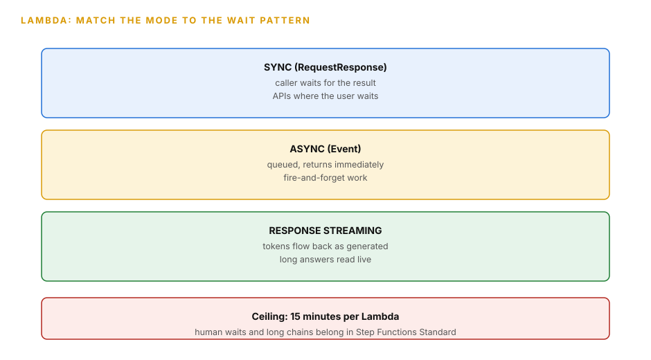
How to read this diagram
- SYNC, RequestResponse: the caller waits for the result. Use it for APIs where the user waits on the response.
- ASYNC, Event: Lambda queues the event and returns immediately. Use it for fire-and-forget work.
- RESPONSE STREAMING: tokens flow back as they are generated. Use it for long answers a user reads live.
- The red footer is the ceiling. One Lambda gets 15 minutes. A pipeline that waits on humans or long chains belongs in Step Functions Standard, not in one Lambda.
10. API Gateway in front of Bedrock
Why this comes next. Lambda runs your logic. Users and frontends need a stable entry point. This entry point must have authentication. It must control the traffic. It must have one unchanging URL. This chapter explains API Gateway in front of Bedrock.

Amazon API Gateway creates managed HTTP, REST, or WebSocket APIs. It provides many services for Bedrock. It gives a stable URL for your application. This URL does not change when you swap models. It controls the traffic.
You can set rate limits per key or per route. It handles authentication. It uses Cognito user pools, Lambda authorizers, or IAM. It validates requests. It manages usage plans.
The integration target is usually a Lambda function. This function calls Bedrock. It does not call Bedrock directly.
Calling Bedrock from a browser or a mobile app has risks. It sends AWS credentials to the client. It does not control the traffic. It does not record the activity. Each model change affects every client.
API Gateway manages these issues. It is the stable endpoint for the exam. The gateway URL stays fixed. The Lambda reads the model ID from AppConfig. This allows model changes without client redeployment.
REST/HTTP API plus Lambda: The request hits the gateway. A Lambda authorizer validates the token. This can be Cognito or custom. Lambda calls Bedrock.
This can be Converse or streaming. The response returns. REST APIs enforce the 29-second integration timeout. HTTP APIs allow 30 seconds.
WebSocket API: The client opens a persistent connection. Lambda pushes tokens as they arrive from ConverseStream. This is the pattern for long streaming answers. These answers exceed REST timeouts.
Throttling: Per-route and per-API-key limits protect Bedrock quotas. They protect from one noisy client. A 429 from API Gateway is your throttle. It is different from a Bedrock ThrottlingException.
Token-limit management: The gateway or Lambda enforces maximum tokens per request. This blocks prompt-injection attempts. These attempts put 100,000 tokens into one call. This blows the budget.
Retries and timeouts: The gateway can retry idempotent integrations. The Lambda behind it implements exponential backoff on Bedrock throttles. (Refer to topic 16).
A SaaS copilot serves 5,000 users. API Gateway throttling is set to 100 requests per second steady. It has a 200 burst per API key tier. The Lambda behind it calls Converse. It has a 4,000-token limit per request. The worst-case token burn follows one formula:
requests per second is the steady throttle rate. max tokens per request is the enforced per-request token limit.
Worked example. tokens per second equals 100 multiplied by 4,000. This is 400,000 tokens per second. The team maps this to their Bedrock quota. They set budget alerts.
When a customer upgrades tiers, only the usage plan changes. No code deploys. No client updates.
Trap
API Gateway timeouts are not Lambda timeouts.
The exam will show a 90-second model call failing. It will offer "increase the Lambda timeout to 5 minutes" as a distractor. The failure is the gateway's 29-second integration timeout. The fix is WebSockets, async, or a shorter streaming pattern. A bigger Lambda timeout is never the fix.
Common Misunderstanding
API Gateway does not stream through REST by default.
Token streaming to the client uses WebSocket APIs. This is the classic pattern. It can also use an ALB or a Lambda function URL. Putting "streaming responses" on a REST endpoint is a bug. Expecting long streams to work is the bug the exam describes.

Per Component: What It Means, What Breaks
| Component | Meaning | If it breaks |
|---|---|---|
| REST API + Lambda | Sync request path | 29-second limit kills long answers. |
| WebSocket API | Token streaming path. | Long streams fall back to timeouts. |
| Cognito authorizer | Who is calling | Credentials leak to clients. No per-user throttle. |
| Throttling and usage plans. | Rate and token budgets. | One client burns the Bedrock quota. |
Consider this scenario: Switch between Claude, Titan, and Llama without client redeploys. The correct trio is AppConfig, Lambda, and API Gateway. AppConfig holds the model ID as runtime configuration. Lambda handles routing. API Gateway provides a stable endpoint.
Do not use CloudFormation. A CloudFormation change is a deployment. This violates "no redeploy". Do not use EventBridge. It routes events.
It does not hold configuration. Consider this scenario: Streaming answers time out. The correct solution is a WebSocket API. Do not use a bigger Lambda timeout.
Next: Chapter 11, Step Functions. The text serves single requests. The text now serves long multi-step workflows. These workflows last longer than the 15-minute Lambda ceiling.
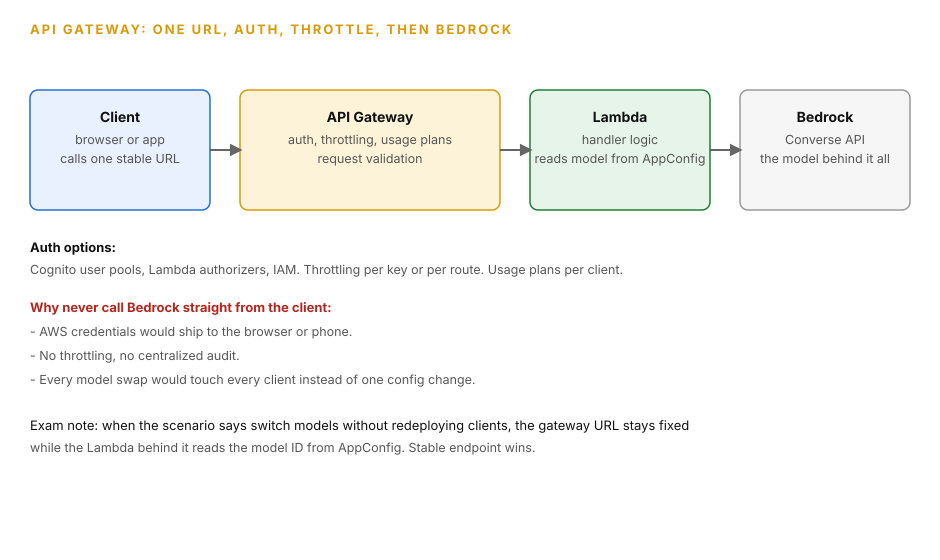
How to read this diagram
- The client calls one stable URL. The gateway is the front door.
- API Gateway applies authentication: Cognito user pools, Lambda authorizers, or IAM. It adds throttling per key or per route, usage plans per client, and request validation.
- The Lambda handler behind the gateway calls Bedrock, usually through the Converse API, reading the model ID from AppConfig.
- Read the red section: why never call Bedrock straight from a browser or mobile app. Credentials would ship to the client. No throttling, no centralized audit. Every model swap would touch every client.
- Exam note: when the scenario says switch models without redeploying clients, the gateway URL stays fixed while the Lambda reads the model ID from AppConfig.
11. Step Functions Orchestration of GenAI Workflows
Why this comes next. Lambda handles one request at a time. Some workflows span hours. They need human approvals. Lambda's 15-minute limit cannot hold them. This chapter covers Step Functions orchestration. It is for long GenAI workflows.

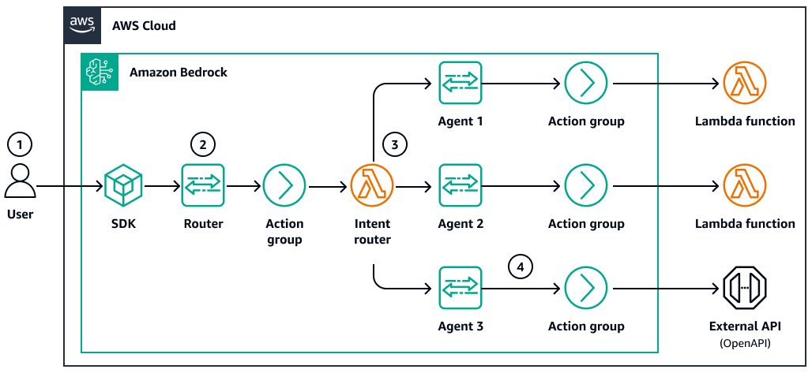
Lambda cannot wait. Step Functions can wait. If a GenAI workflow has waits, approvals, branches, or retries, use Step Functions.
AWS Step Functions is a visual workflow orchestrator. You define a state machine. This is a sequence of steps. It can call a Lambda. It can call Bedrock. It can wait.
It can ask a human. It can branch on a condition. It is written in a JSON-based language. There are two types. Standard workflows executions can run up to one year. They support exactly-once semantics. They charge per state transition.
Use them for long GenAI pipelines with approvals. Express workflows has a maximum duration of 5 minutes. It has high throughput. It has at-least-once semantics. It is cheaper per run. Use it for short, high-volume orchestration.
GenAI work is rarely one call. A document pipeline classifies. It extracts. It validates. It routes for human review. Then it publishes.
A Lambda trying to do that hits the 15-minute limit. It has no durable memory of its state if it crashes. Step Functions keeps the execution state durably. It survives failures. It retries with backoff. It can pause for days.
It waits on a human. That pause is the killer feature. Callback patterns with task tokens let a workflow wait indefinitely. It waits for an approval click. Then it resumes exactly where it stopped.
You define states. Task calls Lambda or Bedrock directly. It uses optimized integrations. Choice branches on output. Wait pauses. Parallel fans out. Map iterates over items. A human approval runs in four steps:
- The state machine sends a message. This can be SNS, email, or Slack. The message contains a task token.
- It pauses with
waitForTaskToken. - The human's approve or reject click calls
SendTaskSuccessorSendTaskFailurewith that token. - The execution resumes.
Circuit breakers are Choice states. They check failure counts or confidence scores. They route to a fallback. This can be a smaller model, a cached answer, or a dead-letter path. This prevents retrying forever.
Stopping conditions is a counter or a max-iterations Choice guard. It ends agent-style loops. Without it, a retry loop can burn budget indefinitely. Step Functions has a native Bedrock integration. It uses bedrock:invokeModel via the SDK integration. Simple model calls need no Lambda wrapper.
This is an insurance claim pipeline. It is a state machine:
- Classify the document. (Bedrock call, 3 seconds).
- Extract fields. (Lambda, 5 seconds).
- Check the confidence. If it is above 0.95, publish. If it is below 0.95, send a task token to a reviewer. Then wait. Reviewers average 6 hours.
A Lambda implementation is not possible. 6 hours is more than 15 minutes.
state transitions is the number of states executed per run. price per transition is the dollars per state transition. This is $0.025 per 1,000 for Standard.
Worked example. This is the 12-state claim pipeline. The pipeline processes 50,000 claims per month.
- Per execution: 12 multiplied by ($0.025 divided by 1,000) equals 12 multiplied by $0.000025, which equals $0.0003.
- Monthly cost: 50,000 multiplied by $0.0003 equals about $15.
The wait itself is free. Orchestration costs about $15. Model calls are thousands of dollars. Step Functions is never the expensive part.
Trap
Prompt Flows versus Step Functions.
Both chain steps. Prompt Flows is a no-code builder. It is prompt-centric. It builds prompt chains with branching. Step Functions is general orchestration. It has human approvals, long waits, and error handling.
The exam gives this scenario: "three-stage prompt chain with conditional branching, built by non-engineers". This is for Flows. The exam gives this scenario: "multi-step workflow with a 2-day human approval and rollback". This is for Step Functions. Match the scenario's verbs.
Common Misunderstanding
Express is not always cheaper.
Express charges per execution. It charges per GB-second. Its 5-minute limit stops any workflow with a human wait. "Cheaper" is true only for short, high-volume runs. Any scenario with approvals, waits over minutes, or exactly-once needs Standard.

Per Component: What It Means, What Breaks
| Component | Meaning | If it breaks |
|---|---|---|
| Confidence gate | Choice state routes on score. | Bad outputs publish. No review. |
| Human approval wait | Task-token pause. Days are OK. | Risky actions execute. No human gate. |
| Retry loop | Bounded re-attempts | No max-attempts guard. Infinite cost burn. |
| Publish result | Terminal state | No clear end state. Executions dangle. |
STEP FUNCTIONS STATE MACHINE (Standard, up to 1 year)
Start
|
v
[InvokeModel: Bedrock] --native integration, no Lambda needed
|
v
[Lambda: validate output]
|
v
<Choice: confidence >= 0.95?> ----no----> [SendTask: notify reviewer
| + waitForTaskToken]
yes | (pauses DAYS, free)
| v
v <Choice: approved?>
[Publish] <----------------yes----------+
|
no --> [Fallback: smaller model or cached answer]
|
End
CIRCUIT BREAKER: count failures in Choice; after N, route to fallback
STOPPING CONDITION: max 3 model attempts per execution
EXPRESS vs STANDARD: human wait (days) forces STANDARD (5-min cap)
This is a state machine. It has native Bedrock integration. It has task-token approval. It has a circuit breaker. It has a stopping condition.
How to Read This Diagram
- Start at the top. The system invokes the model through the native Bedrock integration. Then, a Lambda validates the output.
- The first Choice is the confidence gate. High confidence publishes immediately.
- Low confidence sends a task token to a reviewer. The execution pauses. The pause can last days. It costs nothing.
- The second Choice reads the human's decision. If approved, it publishes. If rejected, it routes to a fallback.
- The three notes at the bottom are the engineering rules. Use a circuit breaker on failures. Use max attempts as a stopping condition. Use Standard when a human wait exists.
Consider this scenario: An agent workflow must pause for manager approval. This can take 48 hours. Then, the workflow must resume. The correct solution is Step Functions Standard with waitForTaskToken. Do not use Lambda with a long sleep.
Lambda has a 15-minute limit. Do not use SQS delay queues. They have a 15-minute maximum. Do not use an agent loop. It does not have a durable pause.
Consider this scenario: A multi-step GenAI pipeline keeps retrying a failing model call. The correct solution is to add a circuit breaker Choice state. It must have a max-attempts stopping condition.
Next: Chapter 12, S3 and EventBridge. The text covers orchestrated workflows. The text now covers pipelines. These pipelines wake when data lands.
12. S3 and EventBridge: Event-Driven GenAI Pipelines
Why this comes next. Step Functions orchestrate workflows. You start these workflows. The other part of production is workflows that start themselves. They start when data arrives.
This chapter covers event-driven pipelines. These pipelines use S3 events and EventBridge routing. They also use Bedrock Data Automation.
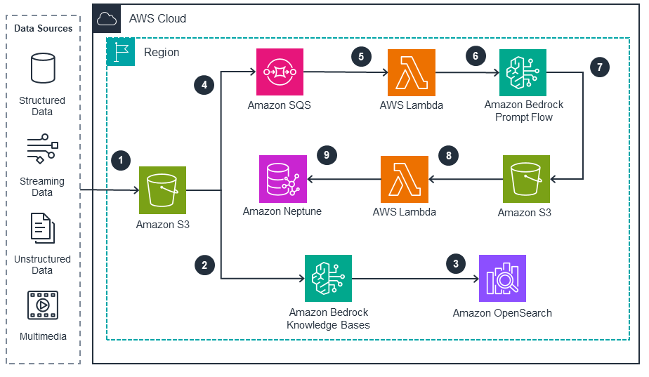
Files land in S3. Events fire. Pipelines wake up. This is how GenAI processes data. No one clicks a button.
Amazon S3 (Simple Storage Service) stores objects. It stores files, documents, videos, and model outputs. Amazon EventBridge is a serverless event bus. It receives events. It routes events to targets based on rules. Lambda and Step Functions work with Amazon EventBridge.
They make the standard event-driven GenAI pipeline. An S3 upload emits an event. EventBridge routes the event. Processing starts automatically. Supporting services are SQS (Simple Queue Service), SNS (Simple Notification Service), and EventBridge Pipes. SQS buffers events.
It controls the processing rate. SNS sends out notifications. EventBridge Pipes connects a source to a target. It can filter and enrich data. It needs no code.
GenAI workloads are bursty and file-shaped. Ten thousand mixed files land per day. Nobody wants a cron job polling S3 every minute. Events give you instant, decoupled reaction. Each file triggers its own processing chain.
Failures retry independently. Producers never know about consumers. Loose coupling is also the exam's resilience answer. If the extraction step is down, events queue up instead of being lost.
The event-driven pipeline, stage by stage:
- A file lands in S3. S3 emits an ObjectCreated event to EventBridge. This happens via S3 event notifications.
- An EventBridge rule matches the event pattern. This pattern includes the bucket name, a prefix like
uploads/invoices/, and a suffix like.pdf. It routes to targets. These targets are a Lambda function, a Step Functions state machine, or an SQS queue. - Lambda reads the file. It calls Bedrock Data Automation or a model for extraction. It writes structured output to another prefix or bucket.
- That write emits another event. This triggers the next stage.
Each stage is decoupled. Each can scale and fail independently. For ordering or rate control, insert SQS between EventBridge and Lambda. Batch up to 10 messages per invocation.
Set visibility timeouts longer than the processing time. Attach a dead-letter queue for poison messages. S3 versioning keeps every version of every object. The exam pairs this with audit and rollback scenarios.
A lender receives 10,000 mixed files per day (PDF, PPT, video). S3 event notifications fire per file. An EventBridge rule routes PDFs to the document-extraction state machine. It routes videos to the transcription path. Peak hour brings 2,000 files in 10 minutes. This is about 3.3 events per second.
Lambda concurrency per file is acceptable. The Bedrock Data Automation async jobs queue behind service quotas. SQS buffers with a 5-minute visibility timeout. A poison PDF crashes extraction.
It retries 3 times. Then it lands in the DLQ for inspection. Nothing is lost. The 9,999 good files are not affected.
Trap
CloudTrail is not a data pipeline.
The exam offers "use CloudTrail to trigger processing when files arrive" as a distractor. CloudTrail records API calls for audit. S3 event notifications plus EventBridge move data. Match the tool to the plane: audit versus data flow.
Common misunderstanding
EventBridge routes. It does not store config. It does not transform heavily.
To "switch models without redeploy," EventBridge is a distractor. AppConfig holds the config. For light filtering and enrichment between source and target, EventBridge Pipes is the no-code answer. Use a Lambda step. This is for heavy transformation.Structured data, streaming data, unstructured data, and multimedia all land in Amazon S3. S3 is the single ingestion point.
Per component: what it means, what breaks.
| Component | Meaning | If it breaks |
|---|---|---|
| S3 landing zone | Single ingestion point. | Producers couple directly to consumers. |
| SQS buffer | Rate control and retries. | Bursts overwhelm downstream quotas. |
| EventBridge rules | Route by bucket/prefix/suffix. | Wrong files trigger wrong pipelines. |
| DLQ | Poison-message parking. | One bad file blocks the whole queue. |
EVENT-DRIVEN GENAI PIPELINE
invoice.pdf lands
|
v
+-----------+ ObjectCreated event +----------------+
| S3 |----------------------->| EventBridge |
| (versioned)| | rule: prefix= |
+-----------+ | invoices/, |
^ | suffix=.pdf |
| +-------+--------+
| extracted.json written |
| (triggers next stage) +-------v--------+
| | SQS queue |
| | (buffer, DLQ) |
| +-------+--------+
| | batch of 10
| +-------v--------+
| | Lambda: |
+<-----------------------------| extract via |
write structured output | Bedrock Data |
to s3://processed/ | Automation |
+----------------+
RULES: SQS visibility timeout > Lambda processing time
DLQ after 3 failed attempts (poison files park here)
S3 versioning ON for audit and rollback
The canonical event-driven extraction pipeline with buffering and dead-letter handling.
How to read this diagram
- Start at the top. A PDF lands in the versioned S3 bucket.
- The ObjectCreated event flows to EventBridge. The EventBridge rule filters on prefix and suffix. Only invoices enter this pipeline.
- The event lands in SQS. SQS buffers bursts. It batches up to 10 messages per Lambda invocation.
- Lambda extracts data via Bedrock Data Automation. It writes structured JSON back to S3. This fires the next stage's event.
- The rules at the bottom are the production checklist. The visibility timeout must be longer than processing. The DLQ must be after 3 failures. Versioning must be on. This is a scenario. Ingest 10,000 mixed files per day. Extract key concepts into structured summaries. The correct answer is S3 event notifications. Use EventBridge routing. Use Bedrock Data Automation.Use SQS buffering and DLQs. Distractors: polling S3 on a schedule (wasteful, slow), CloudTrail as the trigger (audit, not data flow), or Guardrails for extraction (filters, not extractors).
Next: Chapter 13, Model deployment strategies. Data-driven pipelines run. Now consider where the model runs and how you pay for capacity.
13. Model deployment strategies: on-demand, Provisioned Throughput, SageMaker, cascading
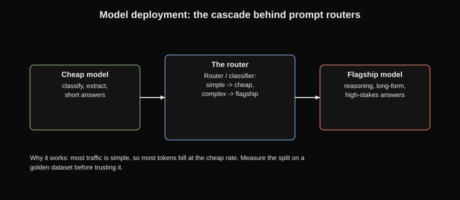
Why this comes next. Your workloads run. Where does the model itself run? How do you survive a traffic spike without wasting money? This chapter covers deployment.
It covers on-demand. It covers Provisioned Throughput. It covers SageMaker. It covers cascading.The exam's favorite answer is usually a hybrid.
Where the model runs decides your latency, your bill, and whether you survive peak.
| Option | What it is | Best when |
|---|---|---|
| On-demand inference | Pay per token. No commitment. Shared capacity. Can throttle at peak. | Spiky, experimental, or unpredictable traffic. |
| Provisioned Throughput (PT) | You reserve model units for 1 to 6 month terms. You pay hourly. You get dedicated capacity. There is no throttling. Latency is stable. You must invoke the provisioned model ARN. Do not invoke the base model ID. If you invoke the base model ID, you silently stay on on-demand. | Steady high-volume traffic with strict latency. |
| SageMaker AI endpoints | For custom models or self-hosted models. Real-time endpoints (autoscaling, strict latency), async inference (long jobs, S3 output), and serverless inference (intermittent traffic, cold starts). | The model is not on Bedrock. It is your fine-tune on SageMaker. It is an open model you host yourself. |
| Model cascading | Route simple queries to a small, cheap model. Escalate to the flagship only on low confidence or complexity. A classifier or prompt router sits in front. | Most traffic is simple. Some traffic needs the flagship. |
No single deployment fits all traffic shapes. On-demand is cheap at low volume. It throttles at high volume. PT is cheap per unit at steady high volume. It is wasteful when idle.
The exam rewards matching the deployment to the traffic shape. The most correct answer for mixed traffic is almost always a hybrid. Use PT for the predictable baseline. Use on-demand for the spikes.
PT mechanics: you purchase model units for a term. Each unit is a fixed throughput of tokens per minute. Your code must call the provisioned model identifier. The classic production bug, and a common exam scenario, is buying PT but still calling invoke_model(modelId='anthropic.claude...').
The purchase is ignored. Throttling continues. Money is wasted. The fix is one line: route to the provisioned ARN.
Hybrid routing: a Lambda checks current load or uses a simple rule. Baseline traffic goes to the provisioned ARN. Overflow goes to on-demand. CloudWatch InvocationThrottles metrics drive the overflow decision.
SageMaker real-time: you choose the instance type and count. Autoscaling adds instances on load. GPU instances are expensive. Cold starts on scale-from-zero hurt strict SLAs. Serverless inference is not correct for sustained high-throughput latency-sensitive work.
Cascading: the router can be a small classifier model. It can be a rules check (query length, keywords). It can be Bedrock's built-in prompt routers. Escalation criteria must be measurable. These criteria include a confidence score below a threshold or a complexity signal.
An app serves 2 million requests per day. It has a steady baseline of 20 requests per second. It has 10x Friday spikes. The latency SLA is less than 3 seconds. Pure on-demand throttles every Friday.
Pure PT sized for the 200 rps peak wastes 90% of capacity six days a week. Hybrid: buy PT for 25 rps of baseline (example: 25 model units at $X per hour). Route the Friday overflow to on-demand. Latency stays under the SLA. The baseline never queues.
The bill drops about 40% compared to peak-sized PT. The numbers are examples. The principle (PT for baseline, on-demand for peaks) is the exam answer.
Trap
Buying PT but calling the base model.
The exam's signature deployment bug: "The team purchased Provisioned Throughput but still sees throttling. Code calls invoke_model with the base model ID." The fix is routing invocations to the provisioned model ARN. Increasing model units is the distractor. Capacity is not the bug. Routing is the bug.
Common misunderstanding
PT is not a cost saver for spiky traffic.
PT is a latency and throughput guarantee. It has an hourly commit. It costs more than on-demand for bursty traffic. PT does not fix randomness.
It stabilizes capacity. It does not stabilize output consistency. Fix nondeterministic outputs with temperature 0 and prompt control. Do not use more model units.
| Traffic shape | Deployment |
|---|---|
| spiky / experimental / unknown | on-demand (Lambda invokes Bedrock) |
| steady baseline + latency SLA | Provisioned Throughput (1-6 month term) |
| baseline + spikes | HYBRID: PT for baseline, on-demand overflow (exam favorite) |
| custom/self-hosted model | SageMaker AI endpoint |
| sustained + strict latency | real-time endpoint + autoscaling |
| long jobs, nobody waiting | async inference (S3 out) |
| intermittent, cold OK | serverless inference |
| simple queries dominate | model cascade: small model first, escalate on low confidence |
HYBRID ROUTING (the exam's most-correct pattern)
traffic in
|
+-----v------+
| Lambda | reads load / AppConfig rule
| router |
+--+---+----+
| |
baseline overflow (spikes)
| |
+-----v-+ +---v-----------+
| PT ARN | | on-demand |
| (no | | (pay per |
| throttle)| token, may |
+--------+ | throttle) |
+---------------+
THE ONE-LINE BUG: bought PT but code still calls the BASE model ID.
Fix: invoke the provisioned model ARN. Capacity was never the bug.
The deployment decision matrix and the hybrid routing pattern with the classic PT routing bug.
How to read this diagram
- The table at the top is the decision tool. Match the traffic shape in the scenario to the deployment in the right column. Mixed baseline plus spikes means hybrid.
- The hybrid sketch shows the Lambda router. The router splits traffic. Steady baseline traffic goes to the provisioned ARN. Overflow traffic goes to on-demand.
- The one-line bug at the bottom is common on the exam. PT is purchased but unused. The code calls the base model ID. The fix is routing. Do not buy more units.
- The SageMaker branch is only for custom models or self-hosted models. It has real-time, async, and serverless options. These options match latency needs.
Scenario: "2M requests per day baseline plus 10x Friday spikes, sub-3s latency." Correct answer: hybrid PT plus on-demand. Distractors: all-SageMaker with GPU autoscaling (cost, cold starts), EC2 sized for peak (idle waste), or pure PT (pays for peak all week). Scenario: "Bought PT, still throttled, code uses base model ID." Correct answer: route to the provisioned ARN. Distractor: buy more model units.
Next: Chapter 14, Enterprise integration. Deployment is complete. Now the enterprise has legacy systems, secure access, and the GenAI gateway.
14. Enterprise integration: legacy systems, secure access, and the GenAI gateway
Why this comes next. You can deploy and scale. The enterprise asks harder questions. These questions include legacy systems, per-team access, secure networking, and one gateway for the company. This chapter shows how to fit Bedrock into the enterprise.

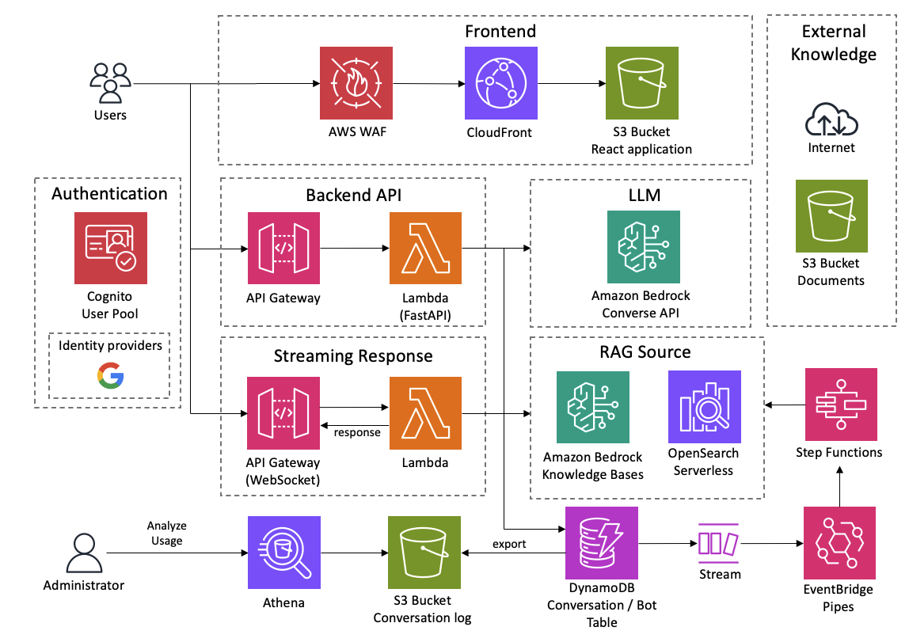
Enterprises do not start greenfield. GenAI must connect to legacy systems. It must respect enterprise identity. It must pass through one governed front door.
Legacy integration connecting GenAI to existing systems. This is a Java property manager. This is an on-prem database. It uses APIs, webhooks, or event-driven sync. API-based is for request/response. Event-driven (EventBridge, SQS) is for loose coupling.
Secure access identity federation. Corporate login works on AWS. RBAC (role-based access control) is for models and data. Least-privilege IAM means each component only touches what it needs.
GenAI gateway This is a centralized abstraction layer. It is for all model access. One team runs it. Every application calls through it. It adds policy enforcement.
This means which models and which guardrails. It adds observability. This means who called what and token spend per team. It adds cost control in one place.
Outposts (AWS hardware on-prem) and Wavelength (AWS at the telecom edge) cover data-residency and ultra-low-latency constraints.
CI/CD for GenAI CodePipeline plus CodeBuild with automated tests. It has prompt regression tests. It has security scans. It has rollback.
Models and prompts deploy like code. They are tested. They are reviewed. They are reversible.
Without a gateway, every team wires its own Bedrock calls. This means ten copies of retry logic. It means ten guardrail configurations that drift apart. No one knows the total token bill.
Auditors find direct model access with no policy. The gateway is the enterprise answer. It helps to "consume FMs securely across the company." Without legacy patterns, GenAI stays a demo. It cannot touch the systems where the data lives.
Applications call the gateway. The gateway is an API Gateway plus Lambda. Or it is a dedicated proxy service. Applications never call Bedrock directly. The gateway handles every call. It handles them in the same order.
- Authenticate the caller. It uses the corporate identity provider.
- Apply policy allowed models per team, mandatory guardrails, per-team token budgets, PII redaction rules.
- Route to Bedrock. Or to a per-tenant KB for data isolation.
- Log every call: caller, model, tokens, latency, guardrail decisions. This log feeds chargeback and audit.
For legacy systems, the gateway or a Lambda adapter translates. The legacy Java application posts to a webhook. The adapter converts to a Converse call. The result returns in the legacy format.
EventBridge decouples the rest. The legacy system emits events. GenAI consumers react.
Multi-tenant data isolation is enforced at the IAM and resource level. Use one KB per tenant. Or use one KB per account. Do not use one shared KB with "please only answer about your hotel" in the prompt.
For CI/CD, prompt and configuration changes go through a pipeline. The pipeline has automated evaluation gates. A golden dataset must still pass. Then deploy with automatic rollback on regression.
A hotel chain has 40 properties. Each property needs its own data isolation. Each property needs near-real-time availability. The design is 40 KBs. This is one KB per property.
Each KB syncs from that property's system. IAM Identity Center permission sets scope each property's application to its own KB. The GenAI gateway enforces a 2,000-token-per-request cap. It logs per-property spend. A shared-KB design would need prompt-level filtering.
The exam rejects this. Prompts are not access control. The per-tenant cost is 40 small KBs. But isolation is provable to auditors. This is the constraint that matters.
This is a trap. Do not use one shared KB with prompt-level access control. This is the exam's favorite multi-tenant distractor. It is "one knowledge base for all hotels, with instructions to only answer about the caller's hotel." Prompts are not security boundaries.
The correct answer is separate KBs.Or separate accounts. Use IAM-enforced isolation. Any option that uses prompt instructions for access control is not correct.
Common misunderstanding
The gateway is policy plus observability. It is not only a proxy.
A plain pass-through proxy adds latency. It adds no value. The exam's gateway does three jobs. It enforces policy. This means which models and guardrails.
It provides observability. This means what happened and who pays. It provides abstraction. This means model swaps without client changes. If an option describes a "simple proxy," it is not correct.
THE GENAI GATEWAY (enterprise front door)
40 property apps (tenants)
|
v
+------------------+ corporate IdP (federation)
| GENAI GATEWAY |<-- who is calling, which team
| API GW + Lambda |
+--------+---------+
|
+-----+------+----------------------------------+
| policy | observability | abstraction |
| - allowed | - per-team tokens | - model ID |
| models | - latency, errors | from |
| - mandatory| - guardrail hits | AppConfig |
| guardrail| - chargeback logs | - clients |
| - token cap| | never |
+-----+------+----------------------------------+ change
|
+-----v----------------------------------+
| Bedrock (Converse / Agents) |
| KB per tenant, IAM-scoped (NOT shared) |
+----------------------------------------+
LEGACY ADAPTER PATTERN
legacy Java app --webhook--> Lambda adapter --Converse--> Bedrock
(translates formats both ways)
CI/CD: prompt/config change -> eval gate (golden dataset)
-> deploy -> auto-rollback on regression
This diagram shows the GenAI gateway's three jobs. It shows the legacy adapter pattern. It shows the GenAI CI/CD gate.
How to read this diagram
- Start at the top. Tenant applications never touch Bedrock. They call the gateway. The gateway authenticates them. It uses the corporate identity provider.
- The three columns are the gateway's jobs. Policy is what is allowed. Observability is what happened and who pays. Abstraction is model swaps without client changes.
- Below is the data plane. It has per-tenant KBs with IAM scoping. The "NOT shared" note is the exam rule.
- The legacy adapter shows the translation pattern. Webhooks come in. Converse calls go out. Legacy formats come back.
- The CI/CD line at the bottom is the deployment discipline. It has evaluation gates before deployment. It has automatic rollback after deployment.
This is a scenario: "Legacy Java PMS, per-hotel access control, near-real-time availability." The correct answer is per-tenant KBs. Use direct ingestion for real-time data. Use IAM Identity Center permission sets. Use a gateway for policy. These are distractors: one shared KB with prompt filtering.
Or CloudTrail for data sync. CloudTrail is for audit. It is not a pipeline. This is a scenario: "Secure FM consumption across the enterprise." The correct answer is a centralized GenAI gateway. The distractor is: every team calls Bedrock directly with shared credentials.
Next: This is Chapter 15. It is about application patterns. The enterprise is wired. Now, consider the user-facing shapes. These are chatbots, copilots, Q and A, and document automation.
15. Application patterns: chatbots, copilots, Q&A over documents, and Bedrock Data Automation
Why this comes next. The infrastructure is complete. Now, consider the shapes users see. These are chatbots, copilots, Q and A over documents, and document automation. This chapter shows the application patterns AWS expects you to know.


Three application shapes cover most GenAI products. Data Automation feeds all of them. It gives structured content from messy files.
| Pattern | Stack | Exam note |
|---|---|---|
| Chatbot | This is conversational Q and A. Use API Gateway (REST plus WebSocket) to Lambda to Bedrock. Use DynamoDB for conversation history. Use KB for grounding. | Conversation state lives in DynamoDB. It does not live in S3. |
| Copilot | This is an assistant. It is embedded inside an existing product. This can be a code editor, a CRM, or a document tool. It needs low latency, streaming, and context from the host application. It usually uses Converse with tool use. It works against the host's APIs. | It optimizes latency inside another user interface. |
| Q and A over docs | This is RAG in its purest form. Documents are in S3. The KB has chunking and embeddings. Use RetrieveAndGenerate or a custom retrieve-then-Converse flow. It gives answers with citations. | It optimizes retrieval quality and citations. |
| Bedrock Data Automation (BDA) | This is the managed document-processing service. It extracts text, tables, and structure from documents, images, video, and audio. It has two output modes. One is standard output. This is a fixed schema. The other is a custom blueprint. You define the fields. It is async. The results are in S3. | This is the exam's IDP (intelligent document processing) answer. |
| Amplify | This is the declarative UI framework. It is for web and mobile front ends on AWS. | This is the exam's answer for "build the chat UI quickly." |
| Amazon Q Developer | It writes code in your IDE. | Distractor swap: This is for developers. It is not for employees. |
| Amazon Q Business | This is the enterprise chat assistant. It works over company data. | Distractor swap: This is for employees. It is not for developers. |
Each shape optimizes different constraints. Chatbots optimize conversation state and streaming. Copilots optimize latency inside another user interface. Q and A over documents optimizes retrieval quality and citations.
BDA exists because "read 10,000 mixed files a day" is not a prompt engineering problem. It is an extraction pipeline problem. Hand-rolling parsers for PDF, PPT, video, and audio is undifferentiated heavy lifting. AWS wants to remove this.
Chatbot session state DynamoDB stores messages. The messages are keyed by conversation ID. They have a TTL. The Lambda loads recent history.
It loads it into the Converse messages array each turn. S3 is not correct here. S3 has higher latency. It has the wrong access pattern for per-turn reads.
Copilot context The host application injects current context. This is the open file. This is the selected ticket. It goes into the system prompt. It goes as document blocks. Streaming over WebSockets makes it feel instant.
Q and A over docs The KB handles chunking, embedding, and retrieval. For custom control, call Retrieve yourself. Build the prompt. Call Converse.
This lets you add reranking. It lets you add custom prompt templates. It lets you add citation formatting.
BDA pipeline An S3 upload triggers the job. This is event-driven. See topic 12. BDA parses all four modalities.
It writes structured JSON to S3. This is per your blueprint. A downstream Lambda validates the data. It loads the data into the KB or database.
Troubleshooting hooks Use CloudWatch Logs Insights queries over prompt and response logs. X-Ray traces the multi-step call chain. The call chain goes from the gateway to Lambda, to Bedrock, to the KB. This shows which step is slow.
A study-materials company processes 10,000 files per day. The files include video. BDA jobs average 45 seconds per file. Sequential processing will take 125 hours. 50 concurrent async jobs will take 2.5 hours. Blueprint extraction gives a fixed JSON schema per file type.
The downstream Lambda does not need per-format parsing code. The KB ingests the structured output with a sync schedule. The total pipeline is an S3 event to searchable knowledge. This takes less than 3 hours daily. It has zero custom parsers.
Trap
Q Business versus Q Developer.
The exam swaps them on purpose. "Developers need code generation and refactoring in the IDE" is Q Developer. "Employees need a chat assistant over company wikis and tickets" is Q Business. Read the user and the task. Do not only read the letter Q.
Common misunderstanding
Use DynamoDB for session state. Do not use S3.
"Store chat history" points to DynamoDB. DynamoDB has millisecond reads. It has TTL expiry. It is keyed by conversation. S3 is for documents.
S3 is for backups. S3 is for batch outputs. The exam pairs S3-for-sessions with latency or cost pain. This is a distractor.
THREE APP SHAPES, ONE FEEDER PIPELINE
(A) CHATBOT (B) COPILOT (embedded)
user -> API GW (REST+WS) host app -> inject context
-> Lambda -> Bedrock -> Converse + tools
-> DynamoDB sessions -> stream via WebSocket
-> KB grounding -> host APIs as tools
(C) Q&A OVER DOCS (D) BDA FEEDER (feeds A, B, C)
docs -> S3 -> KB 10k files/day -> S3 events
-> RetrieveAndGenerate -> BDA (4 modalities)
-> citations in answer standard or blueprint output
-> structured JSON in S3
-> validate (Lambda) -> KB / DB
SESSION STATE RULE: DynamoDB (TTL, ms reads). S3 is for
documents and outputs, never for per-turn chat history.
Q SWAP RULE: Q Developer = writes CODE (IDE).
Q Business = chats over COMPANY DATA.
This diagram shows the three application shapes. It shows the BDA feeder pipeline. It shows the two one-line rules.
How to read this diagram
- Shapes A, B, and C are the three products. Each product lists its signature components. The chatbot has a session store. The copilot has injected context and streaming. The Q and A system has citations.
- Shape D is the feeder. BDA makes messy files into structured JSON. The JSON goes into the KB or database. The KB or database is behind all three shapes.
- The session-state rule is the storage decision. Use DynamoDB for chat history. Use S3 for documents.
- The Q swap rule is the exam's favorite confusion pair. Q Developer writes code. Q Business chats over company data. This is a scenario. Generate study materials from 10k files per day. Include video. Collaborate on outputs in real-time. The correct answer is BDA for extraction.Use S3 versioning for collaboration. Use AppSync or DynamoDB for the real-time layer. These are distractors: "Bedrock Agents for change tracking." Agents reason. They do not version files. "Guardrails for extraction." Guardrails are filters. They are not extractors. This is a scenario: "IDE code completion for the engineering org." The correct answer is Q Developer. The distractor is Q Business.
Next: This is Chapter 16. It is about embedding Bedrock in existing applications. The patterns are known. Now, complete the last mile. Use SDKs, retries, and reliability.
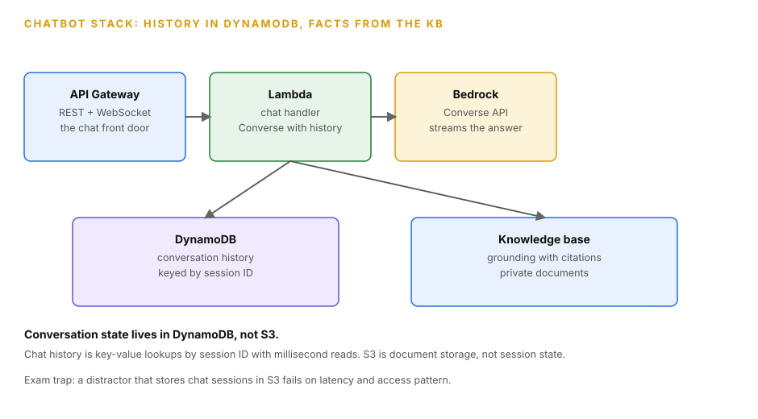
How to read this diagram
- API Gateway exposes REST plus WebSocket. The chat front door.
- Lambda runs the chat handler. It calls Bedrock Converse with the conversation history.
- Bedrock streams the answer back through the gateway.
- The purple box is DynamoDB. It holds conversation history, keyed by session ID, with millisecond key-value reads.
- The blue box is the knowledge base. It grounds answers in your private documents with citations.
- Bold rule: conversation state lives in DynamoDB, not S3. S3 is document storage, not session state. A distractor that stores chat sessions in S3 fails on latency and access pattern.
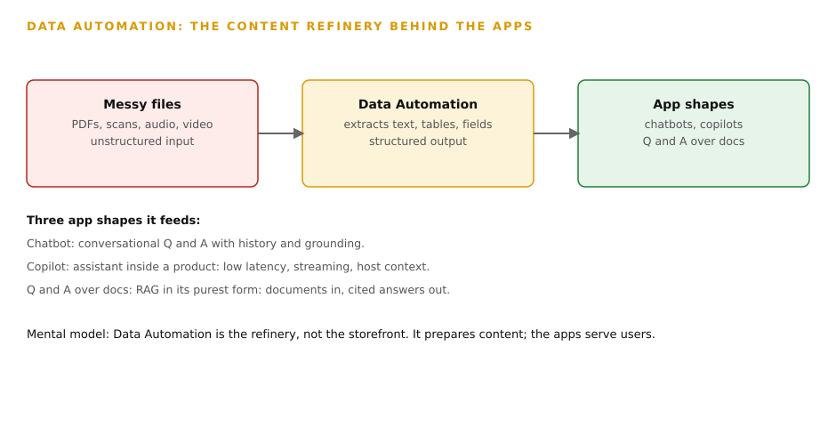
How to read this diagram
- The red box is the input: messy files. PDFs, scans, audio, video. Unstructured.
- The gold box is Bedrock Data Automation. It extracts structured content: text, tables, fields.
- The green box is the output: the three app shapes. Chatbots, copilots, and Q and A over docs.
- Chatbot means conversational Q and A with history and grounding. Copilot means an assistant inside a product with low latency and streaming.
- Mental model: Data Automation is the refinery, not the storefront. It prepares content. The apps serve users.
16. Embed Bedrock in existing applications: SDKs, retries, and reliability
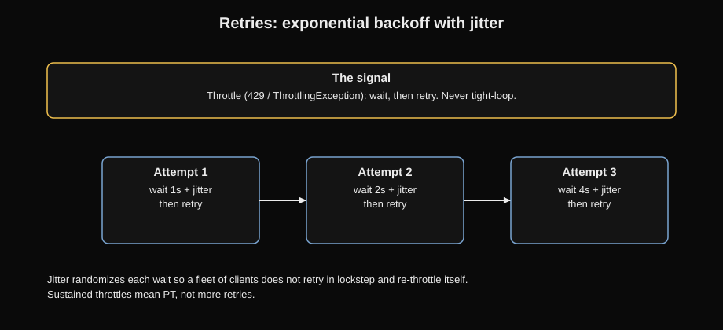
Why this comes next. One mile remains: the code that already exists. SDKs, retries, throttles, structured output, the reliability layer between your app and Bedrock. This chapter closes the volume. It is at the last mile.Production traffic needs retries, backoff, fallbacks, and traces.
The AWS SDK (boto3 in Python, and equivalents in every major language) is how applications call Bedrock. There are two clients. bedrock-runtime is for inference (Converse, InvokeModel). bedrock-agent-runtime is for agents. Reliability patterns are around those calls. exponential backoff with jitter (If a throttle occurs, wait 1 second. Then wait 2 seconds. Then wait 4 seconds. Add random jitter to each wait.
This prevents a fleet of clients from retrying at the same time. Use fallback models. If the primary model throttles or errors, retry with a smaller model. Or retry with a different model.Or serve a cached response. This is graceful degradation). timeouts and circuit breakers (Limit how long you wait. Stop calling a failing dependency after N failures.
Fail fast until it recovers). X-Ray tracing (Use distributed traces across API Gateway to Lambda to Bedrock to KB. This lets you see which hop is slow). model invocation logging (Bedrock can log requests and responses to S3 or CloudWatch. This can be KMS-encrypted. This is for forensics. In compliance environments, restrict or disable it. Logs can contain PII).
Bedrock is a shared service with quotas. Throttles (ThrottlingException) are normal at scale. They are not bugs. An app without retries turns every throttle into a user-facing error.
An app with naive retries (immediate, synchronized) turns one throttle into a retry storm. This makes it worse. The exam tests whether you build the disciplined version: backoff, jitter, fallback, and observability.
The SDK signs every request with SigV4 using IAM credentials. Least-privilege IAM: the app's role allows only bedrock:InvokeModel on the specific model ARNs it needs, not bedrock:*.
The SDK's built-in retry handler already retries throttles with exponential backoff. Production code configures it: max attempts (often 3 to 5 for interactive paths), and distinguishes retryable errors (throttling, 5xx) from fatal ones (validation errors, access denied).
On repeated failure, the circuit breaker opens. Calls fail fast for a cooldown period. This prevents hammering Bedrock. A fallback serves: a smaller model, a cached answer, or a graceful "try again" message.
X-Ray segments wrap each hop. CloudWatch metrics (Invocations, InputTokenCount, OutputTokenCount, InvocationThrottles) feed dashboards and anomaly alarms on token-spend spikes.
Access errors have a known misleading shape. AccessDeniedException can mean the model is not available in the region. It does not always mean a bad policy. The debug order is: check region availability first, then the IAM policy.
A checkout-time recommendation call has a 2-second budget. The app configures: SDK timeout 1.5s, 2 retries with backoff (100ms, 200ms plus jitter), then fallback to a cached "popular items" response. P99 path: primary model answers in 800ms. Throttle path: 100ms wait, retry, 800ms answer, total about 1.7s, still inside budget.
Double-throttle path: fallback served from ElastiCache in 20ms. The user never sees an error. CloudWatch counts the fallback rate. This lets the team buy Provisioned Throughput if fallbacks exceed 1%.
Trap
AccessDenied does not always mean IAM.
The exam's favorite misleading error is AccessDeniedException. This can mean the model is not available in that region. The debug order is region availability first, IAM policy second. Options that jump straight to "fix the IAM policy" miss the region check.
Common misunderstanding
Retries need jitter and a ceiling.
Retry without jitter synchronizes a fleet into thundering herds. Retry without a max-attempts ceiling turns a 2-second budget into a 30-second hang. The exam's reliability questions reward bounded, jittered backoff plus a fallback. They do not reward "retry until it works."
RELIABILITY STACK FOR BEDROCK CALLS
app -> [timeout 1.5s] -> bedrock-runtime (Converse)
|
ThrottlingException / 5xx?
|
retry 1: wait 100ms + jitter
retry 2: wait 200ms + jitter
|
still failing?
|
+-----v------+
| circuit | opens after N failures,
| breaker | fail fast during cooldown
+-----+------+
|
+-----v----------------------------------+
| fallback ladder (graceful degradation) |
| 1. smaller/cheaper model |
| 2. cached response (ElastiCache/DDB) |
| 3. honest "try again" message |
+----------------------------------------+
OBSERVE: X-Ray trace per hop + CloudWatch
(Invocations, Input/OutputTokenCount, InvocationThrottles)
+ invocation logging to S3/CW (KMS-encrypt; DISABLE if PII
compliance forbids storing prompts)
DEBUG ORDER: ThrottlingException -> backoff+fallback (normal at scale)
ValidationException -> YOUR request body is wrong
AccessDeniedException -> check REGION availability first,
then the IAM policy
The reliability stack: bounded retries, circuit breaker, fallback ladder, observability, and the error debug order.
How to read this diagram
- Start at the top. Every call carries a timeout. This prevents a hung dependency from hanging the app.
- Throttles and 5xx errors enter bounded retries with jitter. Two retries is typical for interactive paths.
- Persistent failure opens the circuit breaker. Fail fast during cooldown instead of hammering Bedrock.
- The fallback ladder degrades gracefully. It uses a smaller model, then a cached answer, then an honest message. The user never sees a raw exception.
- The observe block is the production requirement. X-Ray per hop, token metrics in CloudWatch, and invocation logging handled according to PII rules.
- The debug order at the bottom is the exam shortcut. Match each exception to its cause before you touch anything.
Scenario: "Intermittent ThrottlingExceptions occur at peak. Users see errors." Correct: Use SDK exponential backoff with jitter. Use a fallback model or a cached response. Distractors: "increase Provisioned Throughput immediately" (This may be later, but the code fix comes first).
"retry immediately in a loop" (This causes a retry storm). Scenario: "AccessDeniedException occurs on a new model in a new region." Correct: Verify the model is available in that region first. Distractor: Rewrite the IAM policy.
Next: This is the where-to-go-next block below. Domain 2 wired the blocks into applications. Domain 3 keeps them safe.
Volume D3, Domain 3: Safety, Security, and Governance (volume-d3-safety-security-governance.html). Domain 2 wired the building blocks into applications. Domain 3 answers what keeps them safe. This includes Guardrails in depth, IAM and VPC for Bedrock, encryption, audit trails, and responsible AI governance. The master trap list and question bank below stay in this volume. They are your Domain 2 drill ground.
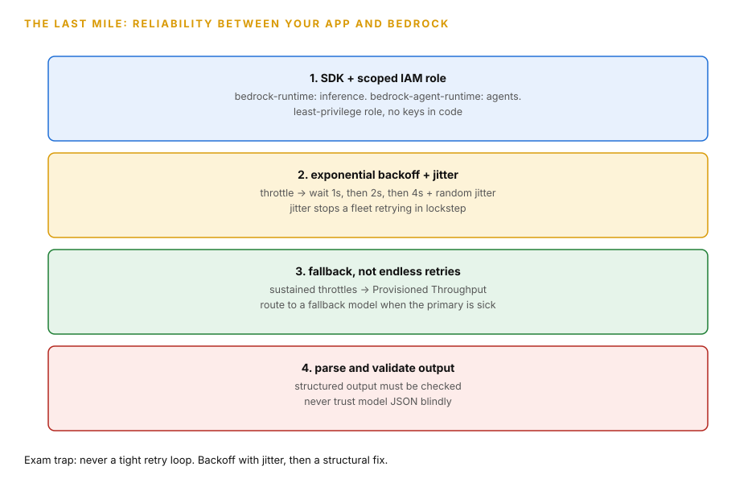
How to read this diagram
- Layer 1: the SDK plus a scoped IAM role. bedrock-runtime handles inference. bedrock-agent-runtime handles agents. Least privilege, no keys in code.
- Layer 2: exponential backoff with jitter. On a throttle, wait 1 second, then 2, then 4, each plus random jitter. Jitter stops a fleet of clients retrying in lockstep.
- Layer 3: fallback, not endless retries. Sustained throttles are solved with Provisioned Throughput, not more retries. Route to a fallback model when the primary is sick.
- Layer 4: parse and validate the structured output. Never trust model JSON blindly.
- Exam trap: never a tight retry loop. Backoff with jitter first, then a structural fix.
Master trap list: Domain 2
These are the distractor patterns AWS reuses. If you can kill each one on sight, Domain 2 is yours.
- Lambda for long waits or approvals The 15-minute ceiling means Step Functions Standard with task tokens.
- Agent ignores new config This means prepare-agent was skipped. Prepare, then re-alias.
- Agents talking via action groups This is not correct. Supervisor to collaborator is the built-in multi-agent mechanism.
- DRAFT collaborator This cannot receive delegations. Prepared plus aliased only.
- Converse for embeddings This is not correct. Embeddings need InvokeModel.
- Prompt caching versus Provisioned Throughput: Repeated-prefix cost versus latency and throughput guarantee. Read the scenario's pain sentence.
- Batch for interactive latency This is not correct. Batch is hours. Interactive is real-time.
- Bought PT but still throttled: The code calls the base model ID. Route to the provisioned ARN.
- PT for output consistency This is not correct. Temperature 0 and prompt control fix randomness. PT fixes capacity.
- One shared KB with prompt-level access control This is not correct. Use separate KBs plus IAM isolation.
- Guardrails for extraction This is not correct. Guardrails filter. Data Automation extracts.
- CloudTrail as a data trigger This is not correct. CloudTrail audits. S3 events plus EventBridge move data.
- CloudFormation or EventBridge for runtime model switching This is not correct. Use AppConfig plus Lambda plus API Gateway.
- S3 for chat session state This is not correct. Use DynamoDB with TTL.
- Q Business versus Q Developer: Company-data chat versus IDE code assistant. Read the user, not the letter Q.
- AccessDeniedException This can mean the model is not in the region. Check the region before you check IAM.
- Streaming does not extend timeouts. REST streaming still reaches the 29-second gateway ceiling. Use WebSockets for long streams.
- Prompt Flows versus Step Functions: No-code prompt chains versus general orchestration with waits and approvals.
- Variants versus versions: A/B testing versus immutable releases.
- Retry storms: Backoff needs jitter and a maximum-attempts ceiling. It also needs a fallback.
Question bank: Domain 2
There are ninety-six questions. There are three multiple-choice and three multiple-response questions per topic. The questions go from easy to hard. They use AWS's "most correct answer" style.
Open each explanation. See why the right answer wins. See why every distractor loses.
Topic 1: The Converse API
Multiple choice · Easy
Q1. Which Bedrock API provides one unified request format? This format has tool use across Claude, Llama, Titan, and Nova.
- A. InvokeModel
- B. Converse
- C. ApplyGuardrail
- D. RetrieveAndGenerate
B is correct. Converse normalizes messages, system prompts, tool configuration, and guardrails across providers. A is not correct. InvokeModel uses provider-specific bodies. C is not correct.
ApplyGuardrail is a standalone safety API. D is not correct. RetrieveAndGenerate is the KB RAG API.
Multiple choice · Medium
Q2. One codebase must support Claude, Llama, and Titan. All must have tool use and inline guardrails. Which API choice is the most correct?
- A. InvokeModel with a separate request body per provider
- B. Converse with toolConfig and guardrailConfig
- C. Hardcoded provider SDKs per model
- D. A Bedrock Agent for each provider
B is correct. Converse gives one code path. This path has native tool use and inline guardrails across providers. A is not correct. Per-provider bodies make the code three times longer. They break the "same code" constraint. C is not correct.
Hardcoded SDKs are a maintenance burden. Converse removes this burden. D is not correct. Agents add orchestration overhead. This is a single-call need.
Multiple choice · Hard
Q3. The model returns a toolUse block during a Converse tool-use loop. The block requests a database lookup. What executes the lookup?
- A. The foundation model executes it directly
- B. Bedrock runs the tool on the model's behalf
- C. Your application code executes it and returns a toolResult
- D. API Gateway executes it automatically
C is correct. The model only emits a structured request. The application runs the code. The application feeds the result back as a toolResult message. A is not correct. Models do not execute code.
B is not correct. Bedrock never runs customer code in the Converse loop. D is not correct. API Gateway routes HTTP. It does not execute tool logic.
Multiple response: select TWO · Easy
Q4. Which TWO are standard Converse request fields?
- A. messages
- B. system
- C. anthropic_version
- D. prompt (Llama-style)
- E. s3_output_uri
A and B are correct. The messages carry the conversation. The system carries the system prompt in the unified shape. C and D are not correct. Those are provider-specific InvokeModel body fields.
E is not correct. That belongs to async or batch jobs. It does not belong to Converse.
Multiple response: select TWO · Medium
Q5. Which TWO statements about the Converse tool-use loop are correct?
- A. The app describes tools in toolConfig with input schemas
- B. The model executes the Lambda tool directly
- C. The app sends the outcome back as a toolResult in a user message
- D. Bedrock stores tool results in S3 automatically
- E. toolConfig is only for image inputs
A and C are correct. The toolConfig declares the tools. The application returns results as toolResult blocks. This lets the model continue. B is not correct. The model never executes code.
D is not correct. No automatic S3 storage occurs in the loop. E is not correct. The toolConfig is for function calling. It is not for images.
Multiple response: select THREE · Hard
Q6. An application lets users attach invoices to a chat. The users ask line-item questions. Which THREE design choices are correct?
- A. Pass each invoice as a document content block in messages
- B. Send a 500-page PDF through every chat turn
- C. Use a knowledge base or Data Automation for large document corpora
- D. Check per-model limits on document size and page count
- E. Always use InvokeModel for document inputs
A, C, and D are correct. Converse accepts document blocks for attached files. Large corpora belong in KB or BDA pipelines. You must respect per-model limits. B is not correct.
Sending a 500-page PDF again for each turn increases cost and context. E is not correct. Converse supports document blocks natively. InvokeModel is not necessary.
Topic 2: InvokeModel and prompt caching
Multiple choice · Easy
Q7. An application must generate embeddings for its vector store. Which API must the application use?
- A. Converse
- B. InvokeModel
- C. ConverseStream
- D. ApplyGuardrail
B is correct. InvokeModel is the only Bedrock API that supports embedding models. A and C are not correct. Converse and ConverseStream only generate text. D is not correct. ApplyGuardrail is a safety API.
Multiple choice · Medium
Q8. Each call sends a 15,000-token product catalog again. Token costs increase. Traffic is constant all day. Which cost fix is the most correct?
- A. Provisioned Throughput.
- B. Prompt caching with a cache point after the catalog.
- C. Batch inference
- D. A larger model
B is correct. A repeated stable prefix is the textbook prompt-caching case. Cached input tokens cost a fraction of fresh ones. PT is a latency and throughput guarantee. It is not a repeated-input cost fix. This is wrong.
Batch is for non-interactive hours-later workloads. This is wrong. A larger model raises cost. This is wrong.
Multiple choice · Hard
Q9. Prompt caching is enabled. The cache hit rate is near zero. Logs show the system prompt includes a per-request timestamp. It is at the very start. What is the cause?
- A. The model does not support caching.
- B. The prefix never matches exactly. The timestamp changes it.
- C. The temperature is too high.
- D. The TTL is too long.
B is correct. Cache matching needs an exact token-for-token prefix. A leading timestamp invalidates it on every call. Move volatile content after the cache point to fix this. The feature is enabled. It is working.
It is just never matching. This is wrong. Temperature affects sampling. It does not affect cache matching. This is wrong.
A longer TTL would help hits. It would not hurt them. This is wrong.
Multiple response: select TWO · Easy
Q10. Which two statements about InvokeModel are correct?
- A. It uses provider-specific request bodies.
- B. It is the only Bedrock API that supports embeddings.
- C. It provides a unified cross-provider shape.
- D. It works without specifying a model.
- E. It cannot stream responses.
A and B are correct. InvokeModel speaks each provider's native body format. It is the embeddings path. The unified shape is Converse. This is wrong.
A model ID is always necessary. This is wrong. InvokeModelWithResponseStream streams. This is wrong.
Multiple response: select TWO · Medium
Q11. Which two items are prompt caching rules?
- A. The cached prefix must match exactly. It must match token for token.
- B. Stable content goes before the cache point. Volatile content goes after it.
- C. Cached prefixes work across different models.
- D. The TTL is infinite once written.
- E. Cache points belong after the user question.
A and B are correct. Exact prefix match is necessary. Placement separates stable from volatile content. Caches are per model. This is wrong. TTL is 5 minutes by default.
It is 1 hour on supported models. This is wrong. The point goes after the stable prefix. It goes before volatile content. This is wrong.
Multiple response: select THREE · Hard
Q12. Which three items describe prompt caching economics correctly?
- A. The first call pays a cache-write surcharge.
- B. It needs repeated identical prefixes to pay off.
- C. Default TTL is 5 minutes. It is 1 hour on supported models.
- D. Caching helps even with zero repeated tokens.
- E. Cache points go after volatile content.
A, B, and C are correct. The write surcharge needs repeat volume. TTL behavior decides if steady traffic keeps the cache warm. With no repeated prefix, there is nothing to reuse. This is wrong.
Points go after stable content. They go before volatile content. This is wrong.
Topic 3: Async and batch inference
Multiple choice · Easy
Q13. Compared with on-demand inference, batch inference is approximately how much cheaper?
- A. 5% cheaper
- B. 10% cheaper
- C. 50% cheaper
- D. 90% cheaper
C is correct. Batch inference trades hours of latency. It is roughly half the on-demand price. A, B, and D understate the discount band. They overstate the discount band.
Multiple choice · Medium
Q14. A company must summarize 2 million support tickets nightly. It is for a 6 AM report. It must minimize cost. Which item is most correct?
- A. Real-time Converse calls in a Lambda loop all night.
- B. Batch inference with S3 input and output. Trigger it on completion.
- C. Provisioned Throughput sized for the nightly peak.
- D. One async invocation per ticket with API Gateway polling.
B is correct. Hours-OK bulk work is the batch case. It is half price. S3 is for input and output. A completion signal shows when it finishes. Real-time loops pay full price.
They have timeout chaos. This is wrong. PT is a latency and throughput guarantee. It is not a bulk discount. A nightly peak is the wrong shape.
This is wrong. Two million individual async jobs add orchestration overhead. They give no benefit. This is wrong.
Multiple choice · Hard
Q15. A product manager proposes batch inference. The feature needs sub-3-second responses. The manager cites the 50% discount. What is the correct response?
- A. Approve. Batch with high concurrency meets 3 seconds.
- B. Reject. Batch latency is measured in hours. Use real-time inference with Provisioned Throughput for guarantees.
- C. Approve. Larger batch files reduce latency.
- D. Use async single invocation instead for 3-second responses.
B is correct. Batch latency is hours by design. Interactive latency needs real-time calls. Use PT when guarantees matter. No batch tuning reaches 3 seconds. This is wrong.
File size does not change batch latency class. This is wrong. Async single is minutes. It is not seconds. This is wrong.
Multiple response: select TWO · Easy
Q16. Which two items describe batch inference?
- A. Input and output travel via S3.
- B. Latency is measured in hours.
- C. Responses return in real time.
- D. It always costs full on-demand price.
- E. It needs a WebSocket connection.
A and B are correct. Batch jobs read JSONL from S3. They process over hours. They write JSONL back. That is real-time inference. This is wrong.
Batch is roughly half price. This is wrong. No connection is held open. This is wrong.
Multiple response: select TWO · Medium
Q17. Which two conditions make batch inference the right choice?
- A. No human waits on any individual result.
- B. Results are necessary by a deadline hours away.
- C. A user watches each answer appear.
- D. A sub-second latency SLA applies.
- E. Each request needs a different model.
A and B are correct. Batch fits non-interactive work. It has hours-scale deadlines. Watching answers appear needs streaming. This is wrong.
Sub-second SLAs need real-time plus PT. This is wrong. Model variety is not a batch criterion. This is wrong.
Multiple response: select THREE · Hard
Q18. Which three items are correct batch job design practices?
- A. Format input as JSONL. Put one request per line.
- B. Detect completion by polling job status. Or detect completion by an EventBridge event.
- C. Expect failed lines as error records. Do not expect silent drops.
- D. Hold an API Gateway connection open during the job.
- E. Expect answers within seconds.
A, B, and C are correct. JSONL lines map one-to-one to output lines. They are in order. Completion is asynchronous. Failures surface as records.
Batch holds no connection. This is wrong. Batch latency is hours. This is wrong.
Topic 4: Prompt management
Multiple choice · Easy
Q19. Marketing must change chatbot tone every week. No engineering deploys are necessary. Which service is most correct?
- A. Hardcoded prompt strings in the application repo.
- B. Bedrock Prompt Management.
- C. Bedrock Agents
- D. Lambda environment variables for full prompts.
B is correct. Prompt Management stores prompts as versioned resources. You can edit them without deploys. Repo changes need deploys. This is wrong. Agents are for dynamic tool use.
They are not for prompt versioning. This is wrong. Environment variables need a deploy or restart to change. They lack versioning. This is wrong.
Multiple choice · Medium
Q20. A team wants to test a formal tone. It wants to test a friendly tone. It wants to test them side by side. It will choose one tone later. Which Prompt Management concept applies?
- A. Versions
- B. Variants
- C. Aliases
- D. Cache points
B is correct. Variants are alternate prompt forms. They are for A/B comparison. Versions are immutable releases. They are not parallel alternatives. This is wrong. Aliases belong to agents.
They do not belong to prompts. This is wrong. Cache points are a cost feature. They are not a testing mechanism. This is wrong.
Multiple choice · Hard
Q21. Yesterday's published prompt change caused regressions. What is the most correct rollback?
- A. Edit the current version in place.
- B. Point the application at the previous immutable version.
- C. Delete the prompt. Recreate it from memory.
- D. Deploy the application code again.
B is correct. Versions are immutable. Rollback is a pointer change to the last good version. It needs zero code deploy. Published versions cannot be edited in place. This is wrong. Deleting destroys history.
It risks inaccuracy. This is wrong. The prompt is decoupled from code. No deploy is necessary. This is wrong.
Multiple response: select TWO · Easy
Q22. Which two statements about Bedrock Prompt Management are correct?
- A. Prompts support {{variable}} placeholders. The system fills them at runtime.
- B. Published versions are immutable snapshots.
- C. There is an extra charge per stored prompt.
- D. Prompts must remain hardcoded in application code.
- E. Versions can be edited after publishing.
A and B are correct. Variables enable runtime substitution. Versions give immutable rollback points. There is no extra charge beyond model tokens. You pay only for model tokens. This is wrong.
Decoupling from code is the point. This is wrong. Published versions are immutable. This is wrong.
Multiple response: select TWO · Medium
Q23. Which two items correctly distinguish variants from versions?
- A. Variants compare alternatives side by side in A/B tests.
- B. Versions are immutable releases. They mark what is in production.
- C. Variants are immutable. Versions are editable.
- D. Versions are for A/B tests. Variants are for releases.
- E. They are synonyms for the same concept.
A and B are correct. Variants exist for comparison. Versions exist for release and rollback. C, D, and E invert the distinction. They collapse the distinction. The exam tests this distinction.
Multiple response: select THREE · Hard
Q24. Which three items form prompt governance for a regulated company?
- A. CloudTrail logs prompt retrievals for audit.
- B. CloudWatch tracks which prompt version serves traffic.
- C. An approval gate before publishing new versions.
- D. Exempting prompts from all audit requirements.
- E. Deleting version history on every publish.
A, B, and C are correct. Audit logging gives prompt change control. Serving-version observability gives prompt change control. Publish approvals give prompt change control. Prompts are auditable artifacts.
This is wrong. History is the rollback mechanism. Deleting history is never correct. This is wrong.
Topic 5: Knowledge Bases and RAG
Multiple choice · Easy
Q25. A team wants its chatbot to answer from the company policy library. The library changes every week. Which approach keeps answers current? Which approach needs the least ongoing work?
- A. A Bedrock Knowledge Base with an S3 data source and a sync schedule.
- B. Fine-tune the foundation model every week.
- C. Paste the full library into the system prompt.
- D. Switch to a larger foundation model.
A is correct. The KB syncs new documents on a schedule. Retrieval stays current. No retraining is necessary. No code changes are necessary. Weekly fine-tuning is slow.
It is expensive. It is stale between runs. This is wrong. The full library burns tokens on every call. The pasted copy becomes stale.
This is wrong. A larger model did not see the private documents. This is wrong.
Multiple choice · Medium
Q26. A RAG system returns answers. The answers ignore the most relevant policy section. The trace shows retrieved chunks. The chunks come from an unrelated chapter. What must the team fix first?
- A. Increase the model size.
- B. Improve the chunking strategy and the embedding choice.
- C. Raise the temperature.
- D. Add more guardrail filters.
B is correct. Off-topic chunks cause retrieval failure. This happens before generation. Chunking and embeddings control retrieval. A bigger model reads wrong passages. It writes wrong answers more fluently. This is wrong.
Temperature controls randomness. It does not control retrieval. This is wrong. Guardrails filter outputs. They do not improve relevance. This is wrong.
Multiple choice. Hard.
Q27. An application needs a custom reranking step. The step is over retrieved passages. The application needs a strict citation format. The managed API does not support this. Which KB query approach must the application use?
- A. RetrieveAndGenerate with default settings
- B. Retrieve, then build the prompt and call Converse directly
- C. Converse with the documents attached as content blocks
- D. InvokeModel with a larger context window
B is correct. Retrieve returns only the chunks. So the application controls reranking. The application controls the prompt template. The application controls the citation format. A is incorrect.
The managed call does not show custom reranking. C is incorrect. Attaching whole documents per turn increases cost and context. D is incorrect. A bigger window does not add reranking or custom citations.
Multiple response: select TWO. Easy.
Q28. Which TWO steps belong to the Knowledge Base ingest phase?
- A. Chunk the documents into small passages
- B. Embed each chunk into a vector
- C. Train the foundation model on the chunks
- D. Write guardrail policies for the chunks
- E. Purchase Provisioned Throughput
A and B are correct. Ingest is chunk, embed, and store. C is incorrect. RAG never trains the model. Documents are read at query time. D is incorrect.
Guardrails are a separate safety layer. They are not an ingest step. E is incorrect. Throughput commitments are not related to ingestion.
Multiple response: select TWO. Medium.
Q29. Retrieved chunks are consistently off-topic. Which TWO changes most directly improve retrieval quality?
- A. Smaller chunks with overlap between neighbors
- B. A stronger embedding model
- C. A larger generation model
- D. A higher temperature
- E. A longer system prompt
A and B are correct. Chunking decides what a passage means. Embeddings decide how meaning is measured. Both are upstream of generation. C is incorrect. The generator cannot fix passages that were never retrieved.
D is incorrect. Temperature affects randomness. It does not affect retrieval. E is incorrect. Prompt length does not change vector similarity.
Multiple response: select THREE. Hard.
Q30. A team designs a production Q and A system. The system uses 50,000 internal documents. Which THREE items belong in the design?
- A. An S3 data source with a sync schedule
- B. A vector store matched to the team's operations needs
- C. Answers with citations to source documents
- D. Embeddings generated through the Converse API
- E. One shared prompt telling the model which documents to trust
A, B, and C are correct. A keeps the corpus fresh automatically. B holds the vectors at scale. C makes answers auditable. D is incorrect. Converse cannot generate embeddings.
InvokeModel with an embedding model does generate embeddings. E is incorrect. Prompts are not access control. They cannot replace retrieval.
Topic 6: Bedrock Agents anatomy
Multiple choice. Easy.
Q31. A developer updates a Bedrock Agent's instruction. The developer wants to change its behavior. The agent continues to behave as before. What is the first item to check?
- A. Whether the Lambda function's memory was increased
- B. Whether prepare-agent was run after the change
- C. Whether the IAM role was rotated
- D. Whether the CloudFormation stack was redeployed
B is correct. Configuration changes stay in DRAFT. Then prepare-agent compiles them to PREPARED. The agent silently runs the old configuration. A is incorrect. Lambda memory affects execution performance.
It does not affect whether the agent sees the new instruction. C is incorrect. Rotating IAM credentials does not refresh agent configuration. D is incorrect. CloudFormation does not deploy Bedrock Agents for routine instruction changes.
Multiple choice. Medium.
Q32. A company needs an assistant. The assistant must call internal REST APIs to check order status. The assistant must answer policy questions from company documents. Which design is the correct one?
- A. A single Converse call with the full policy pasted into the prompt
- B. A Bedrock Agent with an action group using an API schema plus an attached knowledge base
- C. A Lambda function that calls InvokeModel with hardcoded answers
- D. Bedrock Guardrails with the policy documents as denied topics
B is correct. Action groups give the agent API-calling tools. The KB grounds answers in the policy documents. A is incorrect. Pasting the whole policy fails on large documents. It gives no tool use. C is incorrect.
Hardcoded answers cannot show live order status. D is incorrect. Guardrails filter content. They do not call APIs. They do not retrieve documents.
Multiple choice. Hard.
Q33. Auditors need to see an agent's step-by-step reasoning. They need to see which tools it chose and why. They need this for every production invocation. Which approach meets this need with the least custom work?
- A. Parse CloudTrail logs for the reasoning steps
- B. Enable enableTrace on invoke_agent calls
- C. Add X-Ray tracing to the Lambda tools only
- D. Turn on Bedrock model invocation logging
B is correct. enableTrace returns the agent's orchestration trace. This trace shows reasoning, tool choices, and KB lookups. A is incorrect. CloudTrail records API calls. It does not record the agent's internal reasoning. C is incorrect.
X-Ray on the tools shows tool latency. It does not show why the agent chose each tool. D is incorrect. Invocation logging captures request/response payloads. It does not capture the orchestration trace.
Multiple response: select TWO. Easy.
Q34. Which TWO items are core components of every Bedrock Agent?
- A. An agent instruction defining its role and behavior
- B. An EC2 Auto Scaling group
- C. An IAM role granting the agent permissions
- D. A SageMaker training job
- E. A CloudFront distribution
A and C are correct. Every agent has an instruction. Every agent has an IAM role. The IAM role scopes what the agent can call. B is incorrect. Agents are serverless. No EC2 is involved.
D is incorrect. Training is out of scope for Bedrock Agents. E is incorrect. CloudFront is a CDN. It is not an agent component.
Multiple response: select TWO. Medium.
Q35. An agent received a new action group. But the agent behaves as if the tool does not exist. Which TWO steps fix this?
- A. Run prepare-agent to compile DRAFT to PREPARED
- B. Increase the Lambda function's timeout to 15 minutes
- C. Confirm the production alias points to the prepared version
- D. Switch to a larger foundation model
- E. Delete and recreate the knowledge base
A and C are correct. The new action group takes effect only after prepare-agent. Production traffic must use an alias. The alias must point at the prepared version. B is incorrect. Timeout affects execution length.
It does not affect tool visibility. D is incorrect. Model size does not control which tools exist. E is incorrect. The KB is not related to action group registration.
Multiple response: select THREE. Hard.
Q36. A team moves a Bedrock Agent to production. Which THREE production practices are necessary?
- A. Run prepare-agent after every configuration change
- B. Route production traffic through an alias. Never route it through DRAFT.
- C. Grant the agent's IAM role bedrock:* for simplicity
- D. Use enableTrace during testing to validate reasoning
- E. Attach every knowledge base in the account to the agent
A, B, and D are correct. Prepare compiles changes. Aliases give stable production pointers. Traces validate reasoning before launch. C is incorrect. Least privilege is necessary.
Wildcard access violates least privilege. E is incorrect. Attach only the KBs that the agent needs. Extra KBs add noise, cost, and data-exposure risk.
Topic 7: Multi-agent collaboration
Multiple choice. Easy.
Q37. How does a supervisor agent invoke a collaborator agent in Bedrock Agents multi-agent collaboration?
- A. Through an action group pointing at the collaborator
- B. Through the built-in supervisor/collaborator delegation mechanism
- C. By sending the collaborator an SQS message
- D. By invoking the collaborator's Lambda function directly
B is correct. Delegation is a built-in mechanism. You configure it in the supervisor's setup. It is not a tool call. A is incorrect. Action groups are agent-to-tool. They are not agent-to-agent.
C is incorrect. SQS is a messaging queue. It is not the delegation path. D is incorrect. The supervisor talks to the collaborator agent. It does not talk to its underlying Lambda.
Multiple choice. Medium.
Q38. A supervisor agent never delegates to a newly added collaborator. The supervisor's instruction names the collaborator correctly. What is the most probable cause?
- A. The supervisor's foundation model is too small
- B. The collaborator was never prepared and aliased
- C. The supervisor needs an action group for the collaborator
- D. The collaborator's Lambda timeout is too short
B is correct. Collaborators must be PREPARED and ALIASED before the supervisor can delegate. DRAFT collaborators are invisible to delegation. A is wrong: model size does not gate delegation. C is wrong: agent-to-agent delegation never uses action groups. D is wrong: a timeout would cause failures, not silent non-delegation.
Multiple choice. Hard.
Q39. Specialist agents for tax, investments, and estate must collaborate. They must use tools. They must keep memory for weeks. They need human approval for actions over $100,000. Which combination is the correct one?
- A. One giant prompt, S3 for memory, Amazon Lex for approvals
- B. Strands Agents plus AWS Agent Squad for orchestration, MCP servers for tools, DynamoDB for memory, Step Functions for approvals
- C. A single Bedrock Agent with 40 action groups and S3 session storage
- D. Amazon Lex bots per specialty with ElastiCache as the durable memory store
B is correct. Strands/Agent Squad orchestrate specialists. MCP standardizes tools. DynamoDB holds weeks-long session state. Step Functions implements the approval wait. A is incorrect.
A single prompt cannot scale to specialist tool use. Lex is a conversational UI. Lex is not autonomous orchestration. C is incorrect. One agent with 40 tools loses accuracy.
S3 is the wrong store for session state. D is incorrect. Lex is not an agent orchestrator. ElastiCache is ephemeral. It is not durable memory.
Multiple response: select TWO. Easy.
Q40. Which TWO open-source multi-agent frameworks are on the exam?
- A. Strands Agents
- B. AWS Agent Squad
- C. Amazon Lex
- D. AWS CloudFormation
- E. AWS Glue
A and B are correct. Strands Agents is the code-first agent SDK. AWS Agent Squad is the multi-agent orchestration framework. C is incorrect. Lex builds conversational interfaces. Lex does not build agent orchestration.
D is incorrect. CloudFormation is infrastructure as code. E is incorrect. Glue is data integration.
Multiple response: select TWO. Medium.
Q41. Which TWO statements about MCP (Model Context Protocol) are correct?
- A. MCP is an open standard for agent-to-tool interaction
- B. MCP servers must run on EC2 instances
- C. Lightweight MCP servers can run on Lambda
- D. MCP replaces IAM for access control
- E. MCP is only for Bedrock Agents
A and C are correct. MCP standardizes how agents call tools. Simple MCP servers fit the Lambda model. Complex MCP servers use ECS. B is incorrect. Lambda and ECS both host MCP servers. EC2 is not necessary.
D is incorrect. IAM still governs access. MCP does not replace IAM. E is incorrect. MCP is framework-agnostic.
Multiple response: select THREE. Hard.
Q42. Which THREE items are necessary for a production multi-agent deployment?
- A. Every collaborator prepared and aliased
- B. Relay-conversation-history tuned for cost versus context
- C. Human-in-the-loop approval for high-risk actions
- D. One shared administrator IAM role for all agents
- E. Unlimited delegation depth between agents
A, B, and C are correct. Prepared collaborators and aliased collaborators are delegation prerequisites. History relay controls the token cost. Human approval gates risky actions. D is incorrect. Least privilege needs scoped roles for each agent.
It does not need one admin role. E is incorrect. Unbounded delegation depth can cause runaway cost and loops. The depth must be bounded.
Topic 8: Agents with KB and Guardrails
Multiple choice. Easy.
Q43. A financial assistant must not discuss medical diagnoses. Which guardrail control is the correct fit?
- A. Content filters
- B. Denied topics
- C. Word filters
- D. Sensitive information filters
B is correct. Denied topics block subject areas described in plain language. A is incorrect. Content filters target toxicity categories like hate and violence. They do not target subject matter. C is incorrect.
Word filters match exact strings. They do not match topics. D is incorrect. Sensitive information filters detect PII entities. They do not detect discussion topics.
Multiple choice · Medium
Q44. A RAG agent returns confident but wrong answers. The trace shows the retrieved Knowledge Base chunks are irrelevant to the question. What should the team fix FIRST?
- A. Switch to a larger generation model
- B. Retrieval quality: chunking strategy and embeddings
- C. Raise the temperature for more creativity
- D. Add more denied topics to the guardrail
B is correct. Irrelevant chunks mean the failure is in retrieval. The failure is in chunking, splitting context, or weak embeddings. It is not in generation. A is incorrect. A bigger model cannot fix bad input context. C is incorrect.
Higher temperature increases randomness. This is the opposite of the fix. D is incorrect. Guardrails filter outputs. They do not improve retrieval relevance.
Multiple choice · Hard
Q45. A children's tutoring agent must block profanity and violence in inputs. It must prevent harmful outputs. It must resist jailbreaks. It must ground facts in the curriculum. Which design is MOST correct?
- A. Rely on the foundation model's built-in safety
- B. Input and output guardrails with prompt-attack detection plus a knowledge base of the curriculum
- C. Word filters alone on the output
- D. A larger model with a longer system prompt
B is correct. This is defense in depth. Input screening stops attacks early. Output screening catches harmful generations. The Knowledge Base grounds facts. A is incorrect. Base-model safety is never the complete answer for a sensitive audience.
C is incorrect. Word filters are exact-match lists. They miss paraphrases. They do nothing for grounding. D is incorrect. Model size does not provide policy enforcement or grounding.
Multiple response: select TWO · Easy
Q46. Which TWO statements about guardrail controls are correct?
- A. Content filters block toxicity categories at severity thresholds
- B. Word filters detect PII entity types
- C. Sensitive information filters can mask PII
- D. Guardrails extract key concepts from documents
- E. Denied topics match exact strings only
A and C are correct. Content filters handle toxicity at NONE, LOW, MEDIUM, or HIGH thresholds. Sensitive information filters detect more than 30 PII entity types. They use block or mask actions. B is incorrect. Word filters are exact-match blocklists. They are not entity detectors.
D is incorrect. Guardrails filter. They never extract. E is incorrect. Denied topics use natural-language definitions. They do not use exact strings.
Multiple response: select TWO · Medium
Q47. An agent gives a correct, well-grounded answer. But the guardrail blocks the answer. Which TWO are the correct debugging steps?
- A. Inspect the trace to see which guardrail rule fired
- B. Switch to a different foundation model
- C. Narrow the denied topic definition or adjust the threshold
- D. Delete the knowledge base
- E. Disable all guardrails permanently
A and C are correct. The trace identifies the firing rule. The fix is to tune that rule's scope or threshold. B is incorrect. The model produced the correct answer. The policy is the problem.
D is incorrect. The Knowledge Base grounded the answer correctly. E is incorrect. Disabling all safety for a tuning issue is never correct.
Multiple response: select THREE · Hard
Q48. A policy assistant must answer from 12,000 HR documents. It must cite sources. It must never reveal employee ID numbers. Which THREE items complete the design?
- A. Attach a knowledge base containing the HR documents
- B. Apply guardrails to both inputs and outputs
- C. Enable contextual grounding checks against retrieved chunks
- D. Rely on the model's training cutoff for policy facts
- E. Return answers without source references for brevity
A, B, and C are correct. The Knowledge Base supplies current documents. Bidirectional guardrails screen attacks and mask ID numbers. Grounding checks verify claims against sources. D is incorrect. Training cutoffs are older than current policy.
They cannot cite. E is incorrect. Citations are necessary for verifiability. Dropping them makes the design weaker.
Topic 9: Lambda integration patterns
Multiple choice · Easy
Q49. What is the maximum execution time for a single AWS Lambda invocation?
- A. 29 seconds
- B. 5 minutes
- C. 15 minutes
- D. 1 hour
C is correct. Lambda's hard timeout ceiling is 15 minutes (900 seconds). A is incorrect. 29 seconds is the API Gateway REST integration timeout. B is incorrect.
5 minutes is the Step Functions Express maximum duration. D is incorrect. No Lambda execution runs for an hour.
Multiple choice · Medium
Q50. A chatbot streams answers that can take 90 seconds to complete. Users report timeouts. The Lambda function timeout is already 5 minutes. What is the MOST correct fix?
- A. Raise the Lambda timeout to 15 minutes
- B. Move streaming to an API Gateway WebSocket API
- C. Increase the Lambda memory to 10 GB
- D. Add provisioned concurrency to the function
B is correct. The failure is the API Gateway REST 29-second integration timeout. It is not Lambda. WebSockets support long-lived token streams. A is incorrect. Lambda already outlasts the 90 seconds. The gateway is the bottleneck.
C is incorrect. Memory does not extend the gateway timeout. D is incorrect. Provisioned concurrency fixes cold starts. It does not fix timeouts.
Multiple choice · Hard
Q51. A synchronous API receives 200 requests per second at peak. Each request triggers a 60-second model call. Requests are throttled. What is the MOST correct architectural fix?
- A. Request a Lambda concurrency limit increase to 20,000
- B. Put an SQS queue in front and process asynchronously at a controlled rate
- C. Add provisioned concurrency to the Lambda function
- D. Switch to a larger foundation model
B is correct. 200 requests per second times 60 seconds needs 12,000 concurrent executions. Buffering with SQS absorbs the spike. It protects downstream quotas. A is incorrect. Raising the limit does not fix the downstream Bedrock throttle. It just moves the failure.
C is incorrect. Provisioned concurrency keeps functions warm. It does not create capacity. It does not survive 60-second synchronous waits well. D is incorrect. Model size is not related to concurrency throttling.
Multiple response: select TWO · Easy
Q52. Which TWO are Lambda invocation modes?
- A. Synchronous (RequestResponse)
- B. Asynchronous (Event)
- C. FTP transfer
- D. SMTP push
- E. Carrier queue
A and B are correct. Lambda supports synchronous invocation. The caller waits. Lambda supports asynchronous invocation. The event is queued. A 202 is returned. C, D, and E are not Lambda invocation modes.
Multiple response: select TWO · Medium
Q53. A GenAI API faces 10x traffic spikes. Which TWO controls protect the API?
- A. An SQS queue in front of Lambda to absorb bursts
- B. Reserved concurrency for the critical function
- C. Provisioned concurrency to raise the regional limit
- D. Synchronous retries in a tight loop
- E. Disabling all throttling
A and B are correct. SQS buffers bursts into a controlled processing rate. Reserved concurrency guarantees capacity for the critical function. C is incorrect. Provisioned concurrency addresses cold starts. It does not address the concurrency limit.
D is incorrect. Tight retry loops create retry storms. E is incorrect. You cannot simply disable throttling. Removing throttling causes overload.
Multiple response: select THREE · Hard
Q54. A team builds token-by-token streaming for a copilot. The answers can be up to 5 minutes long. Which THREE components form the correct pattern?
- A. Lambda response streaming
- B. API Gateway WebSocket API
- C. ConverseStream from Bedrock
- D. REST API with default settings for the full 5 minutes
- E. Polling S3 for each new token
A, B, and C are correct. ConverseStream produces tokens incrementally. Lambda streams the tokens. The WebSocket API delivers the tokens over a long-lived connection. D is incorrect.
The REST 29-second integration timeout kills 5-minute streams. E is incorrect. Polling S3 per token has high latency. It is not a streaming pattern.
Topic 10: API Gateway in front of Bedrock
Multiple choice · Easy
Q55. A Lambda behind a REST API calls a model. The model takes 45 seconds. The call always fails at the same elapsed time. Which limit is firing?
- A. The Lambda 15-minute timeout
- B. The API Gateway 29-second integration timeout
- C. The Bedrock token limit
- D. The SQS visibility timeout
B is correct. REST API integrations time out at 29 seconds. This occurs regardless of Lambda's longer limit. A is incorrect. Lambda allows 15 minutes. C is incorrect.
A token limit would cause a different error. It would not cause a fixed-time timeout. D is incorrect. SQS is not in this path.
Multiple choice · Medium
Q56. Operations must switch between three foundation models. They must not redeploy clients or code. Which combination is MOST correct?
- A. CloudFormation parameters plus client updates
- B. EventBridge rules holding the model configuration
- C. AppConfig for the model ID, Lambda for routing, API Gateway for a stable endpoint
- D. Hardcoded model IDs with a weekly deploy train
C is correct. AppConfig serves the model ID as runtime configuration. Lambda routes on the model ID. The gateway URL never changes for clients. A is incorrect. CloudFormation changes are deployments. This violates the no-redeploy constraint.
B is incorrect. EventBridge routes events. It does not hold configuration. D is incorrect. Hardcoding and deployments are exactly what the scenario forbids.
Multiple choice · Hard
Q57. One enterprise customer uses too much of the shared Bedrock quota. This starves other tenants. Which fix is MOST correct?
- A. Buy Provisioned Throughput for the noisy customer only
- B. Per-API-key throttling and usage plans on API Gateway
- C. Remove authentication to reduce overhead
- D. Increase the Lambda memory for all functions
B is correct. Per-API-key throttling and usage plans cap each tenant's rate at the front door. This protects the shared quota. A is incorrect. Provisioned Throughput is a capacity purchase. It is not per-tenant rate control.
It does not stop one tenant from consuming the quota. C is incorrect. Removing authentication makes the problem worse. D is incorrect. Lambda memory is not related to quota consumption.
Multiple response: select TWO · Easy
Q58. Which TWO items does API Gateway provide in front of Bedrock?
- A. Request throttling
- B. Authentication and authorization
- C. Model training
- D. GPU provisioning
- E. Vector storage
A and B are correct. API Gateway throttles requests. API Gateway enforces authentication with Cognito, Lambda authorizers, or IAM. C is incorrect. Training happens on SageMaker. It does not happen on the gateway.
D is incorrect. The gateway provisions no compute. E is incorrect. Vectors live in OpenSearch, Aurora, or S3 Vectors.
Multiple response: select TWO · Medium
Q59. Why put API Gateway in front of Bedrock instead of calling Bedrock from clients directly? Select TWO.
- A. A stable URL so model changes never touch clients
- B. Central throttling and per-client rate control
- C. Faster model inference
- D. Unlimited free throughput
- E. Automatic prompt engineering
A and B are correct. The gateway decouples clients from model choices. The gateway enforces rate policy in one place. C is incorrect. The gateway adds a hop. It does not speed up inference.
D is incorrect. Throughput is quota-bound. It is not unlimited or free. E is incorrect. The gateway does not engineer prompts.
Multiple response: select THREE · Hard
Q60. A streaming chatbot serves authenticated users with per-tier rate limits. Which THREE items belong in the gateway design?
- A. WebSocket API for token streaming
- B. Cognito authorizer for authentication
- C. Per-route throttling and usage plans
- D. REST API for 10-minute streaming sessions
- E. Anonymous unauthenticated access for simplicity
A, B, and C are correct. WebSockets carry long streams. Cognito identifies callers. Throttling and usage plans enforce per-tier limits. D is incorrect.
REST integrations time out at 29 seconds. E is incorrect. Anonymous access removes per-user throttling and audit.
Topic 11: Step Functions orchestration
Multiple choice · Easy
Q61. A workflow must run for up to 6 months. It must have exactly-once semantics. Which Step Functions type fits?
- A. Express workflows
- B. Standard workflows
- C. Synchronous Express
- D. Step Functions has no long-running option
B is correct. Standard workflows run for up to one year. They have exactly-once semantics. Option A is wrong. Express caps at 5 minutes. It has at-least-once semantics.
Option C is wrong. Synchronous Express is still limited by the 5-minute cap. Option D is wrong. Standard workflows are the long-running option.
Multiple choice · Medium
Q62. A GenAI pipeline must pause for manager approval. This can take 48 hours. The pipeline must then resume. Which design is MOST correct?
- A. A Lambda function that sleeps for 48 hours
- B. An SQS delay queue with a 48-hour delay
- C. Step Functions Standard with waitForTaskToken
- D. Step Functions Express with a Wait state
C is correct. waitForTaskToken pauses durably. The approver's click resumes the execution. Standard supports multi-day runs. Option A is wrong. Lambda has a maximum of 15 minutes.
Option B is wrong. SQS delays have a maximum of 15 minutes. Option D is wrong. Express has a maximum of 5 minutes total.
Multiple choice · Hard
Q63. A multi-step GenAI pipeline keeps retrying a failing model call. It is an infinite loop. It uses too much budget. Which fix is MOST correct?
- A. Add more retries with longer waits
- B. Add a Choice state as a circuit breaker with a max-attempts stopping condition
- C. Increase the Lambda timeout
- D. Switch to a smaller model and keep retrying
B is correct. A circuit breaker routes to a fallback after N failures. A stopping condition limits total attempts. Option A is wrong. More retries make an infinite loop worse.
Option C is wrong. Timeout length does not stop logical retries. Option D is wrong. Model size does not fix unbounded retry logic.
Multiple response: select TWO · Easy
Q64. Which TWO are Step Functions state types?
- A. Choice
- B. Wait
- C. EC2
- D. S3
- E. SELECT
A and B are correct. Choice branches on conditions. Wait pauses the execution. Options C and D are wrong. EC2 and S3 are services.
They are not state types. Option E is wrong. SELECT is SQL. It is not a state type.
Multiple response: select TWO · Medium
Q65. Which TWO describe the Step Functions human-approval callback pattern?
- A. waitForTaskToken pauses the execution until resumed
- B. The approver's decision arrives via SendTaskSuccess or SendTaskFailure with the token
- C. A Lambda function sleeps until the human responds
- D. An SQS delay queue holds the approval for 48 hours
- E. The workflow polls the human every 5 seconds
A and B are correct. The task token pattern pauses durably. It resumes exactly on the approver's callback. Option C is wrong. Lambda cannot sleep for more than 15 minutes. Option D is wrong.
SQS delays have a maximum of 15 minutes. Option E is wrong. Polling wastes transitions. The callback pattern does not need polling.
Multiple response: select THREE · Hard
Q66. Which THREE are safeguards for a production GenAI Step Functions pipeline?
- A. A max-attempts stopping condition on model-call loops
- B. A circuit breaker Choice state routing repeated failures to a fallback
- C. A fallback path using a smaller model or cached answer
- D. Infinite retries until the call succeeds
- E. Running the entire pipeline inside one Lambda function
A, B, and C are correct. Stopping conditions limit cost. Circuit breakers stop failure cascades. Fallbacks keep availability. Option D is wrong. Infinite retries are a failure mode.
They are not a fix. Option E is wrong. One Lambda reintroduces the 15-minute limit. It loses durable state.
Topic 12: S3 plus EventBridge pipelines
Multiple choice · Easy
Q67. A file lands in S3. Processing must start automatically. Which mechanism emits the trigger?
- A. CloudTrail data events
- B. S3 event notifications (ObjectCreated)
- C. AWS Config rules
- D. Amazon Macie findings
B is correct. S3 event notifications fire on object creation. They route to EventBridge, Lambda, or SQS. Option A is wrong. CloudTrail is for audit. It is not for data-flow triggers.
Option C is wrong. Config tracks configuration compliance. Option D is wrong. Macie finds PII. It does not trigger pipelines.
Multiple choice · Medium
Q68. A lender must ingest 10,000 mixed files per day (PDF, PPT, video). The lender must extract key concepts into structured summaries. Which design is MOST correct?
- A. A cron job that polls S3 every minute
- B. CloudTrail triggering Lambda on each API call
- C. S3 event notifications plus EventBridge routing to Bedrock Data Automation, with SQS buffering
- D. Bedrock Guardrails reading each file for extraction
C is correct. Events give instant decoupled reaction. Data Automation extracts from all four modalities. SQS absorbs bursts. Option A is wrong. Polling is slow and wasteful at this scale. Option B is wrong.
CloudTrail is for audit. It is not a data trigger. Option D is wrong. Guardrails filter. They do not extract.
Multiple choice · Hard
Q69. One malformed PDF crashes the extraction Lambda on every retry. This blocks the queue. What is the MOST correct fix?
- A. Retry the message indefinitely until it succeeds
- B. Route to a dead-letter queue after a bounded number of attempts
- C. Increase the Lambda memory to 10 GB
- D. Delete the SQS queue and recreate it
B is correct. A DLQ parks poison messages after N attempts. Healthy files continue to flow. The bad file can be inspected. Option A is wrong. Infinite retries block the queue forever.
Option C is wrong. Memory does not fix a malformed file. Option D is wrong. Recreating the queue loses all queued work.
Multiple response: select TWO · Easy
Q70. Which TWO statements about EventBridge and SQS are correct?
- A. EventBridge routes events to targets based on rules
- B. SQS buffers events and controls processing rate
- C. CloudTrail moves file data between services
- D. SNS trains machine learning models
- E. EventBridge stores file contents
A and B are correct. EventBridge is the event router. SQS is the buffer. It has batching, visibility timeouts, and DLQs. Option C is wrong. CloudTrail audits API calls.
Option D is wrong. SNS is for notifications. Option E is wrong. EventBridge carries event metadata. It does not carry file contents.
Multiple response: select TWO · Medium
Q71. Which TWO are good SQS methods for a GenAI extraction pipeline?
- A. Set the visibility timeout longer than the processing time
- B. Attach a dead-letter queue after a bounded number of failures
- C. Use FIFO queues for all workloads
- D. Delete the queue on the first error
- E. Set visibility timeout to zero for speed
A and B are correct. A longer visibility timeout prevents duplicate processing. A DLQ isolates poison messages. Option C is wrong. FIFO is for ordering. It is not a default for all workloads.
Option D is wrong. Deleting the queue destroys queued work. Option E is wrong. Zero visibility timeout causes immediate duplicate delivery.
Multiple response: select THREE · Hard
Q72. Which THREE belong in a production document-ingestion pipeline?
- A. S3 versioning for audit and rollback
- B. EventBridge rules filtering on bucket prefix and file suffix
- C. Bedrock Data Automation for extraction from mixed file types
- D. Guardrails for content extraction
- E. CloudTrail as the file-arrival trigger
A, B, and C are correct. Versioning gives rollback. EventBridge rules route the correct files to the correct pipeline. Data Automation extracts from documents, images, video, and audio. Option D is wrong. Guardrails filter.
They do not extract. Option E is wrong. CloudTrail is for audit. It is not a data trigger.
Topic 13: Model deployment strategies
Multiple choice · Easy
Q73. Provisioned Throughput commitments are available for which terms?
- A. 1 day to 1 week
- B. 1 week to 1 month
- C. 1 month to 6 months
- D. 1 year to 3 years
C is correct. PT is purchased in 1-month and 6-month commitments. Options A and B are wrong. No daily or weekly PT terms exist. Option D is wrong. Those are EC2 Savings Plan style terms. They are not PT terms.
Multiple choice · Medium
Q74. An app serves a steady baseline of 20 requests per second. It has 10x Friday spikes. It has a sub-3-second latency SLA. Which deployment is MOST correct?
- A. Provisioned Throughput sized for the Friday peak, all week
- B. Hybrid: Provisioned Throughput for the baseline plus on-demand for spikes
- C. Pure on-demand for everything
- D. EC2 instances sized for the peak
B is correct. PT covers the predictable baseline. It has no throttling. On-demand absorbs spikes. It does not pay for peak capacity all week. Option A is wrong. Peak-sized PT wastes approximately 90% of capacity six days a week.
Option C is wrong. Pure on-demand throttles every Friday. Option D is wrong. Fixed EC2 for peak is idle waste. It has no managed-model benefit.
Multiple choice · Hard
Q75. A team purchased Provisioned Throughput. The team still sees throttling. Their code calls invoke_model with the base model ID. What is the fix?
- A. Buy more Provisioned Throughput model units
- B. Route invocations to the provisioned model ARN
- C. Switch to a larger foundation model
- D. Add retries with exponential backoff
B is correct. Calling the base model ID bypasses the purchased capacity. Only the provisioned ARN uses the capacity. Option A is wrong. Capacity is not the problem. Routing is the problem.
Option C is wrong. Model size is not related. Option D is wrong. Retries hide the misconfiguration. They do not fix it.
Multiple response: select TWO · Easy
Q76. Which TWO match deployment to traffic shape correctly?
- A. On-demand for spiky, experimental, or unpredictable traffic
- B. Provisioned Throughput for a steady baseline with a latency SLA
- C. Provisioned Throughput for bursty traffic as a cost saver
- D. On-demand guarantees no throttling at any scale
- E. Batch inference for interactive chat
A and B are correct. On-demand fits unpredictability. PT fits steady baselines that need guarantees. Option C is wrong. PT on bursty traffic costs more than on-demand.
Option D is wrong. On-demand can throttle at peak. Option E is wrong. Batch latency is hours.
Multiple response: select TWO · Medium
Q77. A team self-hosts a fine-tuned model on SageMaker AI. Which TWO endpoint choices fit the stated needs?
- A. Real-time endpoints with autoscaling for strict latency SLAs
- B. Async inference for long jobs with S3 output
- C. Serverless inference for sustained high-throughput strict-latency traffic
- D. Real-time endpoints for overnight batch jobs
- E. Async inference for sub-second chat
A and B are correct. Real-time with autoscaling gives strict latency. Async handles long jobs. No one waits for these jobs. Option C is wrong. Serverless inference has cold starts. It fits intermittent traffic.
It does not fit sustained strict-latency load. Option D is wrong. Overnight batch jobs belong on batch inference. Option E is wrong. Async latency is minutes. It is not sub-second.
Multiple response: select THREE · Hard
Q78. Which THREE describe a correct hybrid Provisioned Throughput design?
- A. Size Provisioned Throughput to the predictable baseline
- B. Route traffic spikes to on-demand
- C. Use InvocationThrottles metrics to guide overflow routing
- D. Size Provisioned Throughput to the absolute peak for the whole term
- E. Use one deployment shape for all traffic patterns
A, B, and C are correct. Provisioned Throughput (PT) covers the baseline. On-demand covers traffic spikes. Throttle metrics control the routing decision. Option D is wrong.
Peak-sized PT wastes capacity most of the time. Option E is wrong. The hybrid model exists because one shape cannot fit mixed traffic.
Topic 14: Enterprise integration
Multiple choice · Easy
Q79. An enterprise wants every team to consume foundation models through one governed layer with policy and cost tracking. What is this pattern called?
- A. A VPC endpoint
- B. A GenAI gateway
- C. A CloudFormation macro.
- D. An S3 access point.
B is correct. The GenAI gateway centralizes model access. It provides policy enforcement, observability, and cost control. A is wrong. VPC endpoints provide private network paths. They do not provide governance.
C is wrong. CloudFormation macros change templates. D is wrong. S3 access points manage bucket access.
This is a multiple choice question. This is a medium question.
Q80. A hotel chain needs per-property data isolation. It needs near-real-time availability in a GenAI assistant. Which design is MOST correct?
- A. Use one shared knowledge base. Use prompt instructions to answer only about the caller's hotel.
- B. Use one knowledge base per property. Use IAM Identity Center permission sets to scope access.
- C. Use one IAM role for all properties. Give it full Bedrock access.
- D. Use CloudFront signed URLs as the access control mechanism.
B is correct. Separate KBs with IAM-enforced isolation make access control provable. Prompts are not security boundaries. A is wrong. Prompt instructions cannot enforce access control.
C is wrong. One shared role removes tenant isolation. D is wrong. Signed URLs control CDN access, not KB data isolation.
This is a multiple choice question. This is a hard question.
Q81. A bank rolls out GenAI to 30 teams. Requirements: no team calls Bedrock directly, token budgets per team, mandatory guardrails, and chargeback reporting. Which design is MOST correct?
- A. Share one set of AWS credentials with all teams.
- B. Use a central GenAI gateway. Use corporate identity federation. Use per-team policies and budgets. Use per-call logging.
- C. Let each team build its own Bedrock integration. Reconcile bills quarterly.
- D. Block Bedrock. Route everything through email approvals.
B is correct. The gateway enforces identity, policy, budgets, and logging in one place. This is the enterprise consumption pattern. A is wrong. Shared credentials remove attribution and control.
C is wrong. Thirty bespoke integrations cannot enforce uniform policy. D is wrong. It blocks the business goal completely.
Select TWO responses. This is an easy question.
Q82. Which TWO items are jobs of the GenAI gateway?
- A. Enforce policy for models and guardrails.
- B. Provide observability and per-team cost attribution.
- C. Train custom foundation models.
- D. Provision GPU instances.
- E. Write application prompts.
A and B are correct. The gateway enforces which models and guardrails each team can use. It logs usage for chargeback. C is wrong. Training is a SageMaker concern. D is wrong.
The gateway provisions nothing. E is wrong. Prompt authoring belongs to app teams. It should be in Prompt Management.
Select TWO responses. This is a medium question.
Q83. A legacy Java system must feed data to a GenAI pipeline. It must do this without a rewrite. Which TWO items are valid integration approaches?
- A. Use a Lambda adapter. Translate between the legacy format and Converse calls.
- B. Use EventBridge for loose coupling. Connect the legacy system and GenAI consumers.
- C. Rewrite the entire legacy system first.
- D. Embed database credentials in prompts.
- E. Give the legacy system the Bedrock root credentials.
A and B are correct. Adapters translate formats without rewrites. Events decouple producers from consumers. C is wrong. A full rewrite defeats the purpose of integration. D is wrong.
Credentials in prompts leak secrets. E is wrong. Root credentials violate least privilege. This is a catastrophic error.
Select THREE responses. This is a hard question.
Q84. Which THREE items complete a multi-tenant GenAI checklist?
- A. Use one knowledge base per tenant.
- B. Use IAM Identity Center permission sets. Scope each tenant to its own resources.
- C. Enforce per-request token caps at the gateway.
- D. Use prompt instructions as the access control mechanism.
- E. Use shared credentials across all tenants.
A, B, and C are correct. Resource separation, IAM scoping, and gateway-enforced caps provide provable isolation and cost control. D is wrong. Prompts are not access control. E is wrong. Shared credentials remove attribution and isolation.
Topic 15: Application Patterns
This is a multiple choice question. This is an easy question.
Q85. An engineering organization wants an AI assistant inside the IDE. The assistant will do code generation and refactoring. Which service fits?
- A. Amazon Q Business.
- B. Amazon Q Developer.
- C. Bedrock Guardrails.
- D. AWS Glue Data Quality.
B is correct. Q Developer is the IDE coding assistant. A is wrong. Q Business is the enterprise chat assistant for company data. C is wrong.
Guardrails are safety filters. D is wrong. Glue Data Quality monitors data pipelines.
This is a multiple choice question. This is a medium question.
Q86. A chatbot must keep conversation history across turns. It needs millisecond reads and automatic expiry. Which store is MOST correct?
- A. Amazon S3
- B. Amazon DynamoDB with TTL.
- C. Amazon ElastiCache as the durable store.
- D. Amazon EBS volumes.
B is correct. DynamoDB gives millisecond keyed reads with TTL expiry. This matches per-turn session access. A is wrong. S3 has higher latency. It has the wrong access pattern for per-turn reads. C is wrong.
ElastiCache is temporary. It is not a durable session store. D is wrong. EBS is block storage for EC2. It is not a session store.
This is a multiple choice question. This is a hard question.
Q87. A company must generate study materials from 10,000 files per day. The files include video. The company needs real-time collaboration on the outputs. Which combination is MOST correct?
- A. Use Bedrock Agents for change tracking. Use Guardrails for extraction.
- B. Use Bedrock Data Automation for extraction. Use S3 versioning. Use AppSync or DynamoDB for collaboration.
- C. Use manual uploads with nightly cron scripts.
- D. Use Kendra for extraction. Use S3 for sessions.
B is correct. Data Automation extracts from all four modalities. S3 versioning helps with collaboration on outputs. AppSync or DynamoDB provides the real-time layer. A is wrong. Agents do not version files. Guardrails do not extract data.
C is wrong. Manual uploads and cron cannot scale to 10,000 files per day. D is wrong. Kendra is enterprise search, not an extractor. S3 is wrong for session state.
Select TWO responses. This is an easy question.
Q88. Which TWO statements about Bedrock Data Automation are correct?
- A. It processes documents, images, video, and audio.
- B. It offers standard output or custom blueprint output.
- C. It trains custom foundation models.
- D. It replaces Bedrock Guardrails.
- E. It only works on plain text files.
A and B are correct. Data Automation handles four modalities. It uses fixed-schema standard output or user-defined blueprints. C is wrong. It extracts data. It does not train models.
D is wrong. Guardrails are safety filters. This is a different job. E is wrong. Multimodality is the main purpose.
Select TWO responses. This is a medium question.
Q89. Which TWO items belong in a production chatbot architecture?
- A. Use API Gateway WebSocket API for token streaming.
- B. Use DynamoDB with TTL for conversation sessions.
- C. Use S3 for per-turn chat history reads.
- D. Use REST API for 10-minute streaming sessions.
- E. Do not use authentication for lower latency.
A and B are correct. WebSockets carry long token streams. DynamoDB provides per-turn session reads with expiry. C is wrong. S3 latency and access patterns do not fit per-turn reads.
D is wrong. REST integrations time out at 29 seconds. E is wrong. Skipping authentication removes throttling and audit.
Select THREE responses. This is a hard question.
Q90. A Q and A system for documents returns plausible but uncited answers. Which THREE items improve it?
- A. Choose the chunking strategy for each document type.
- B. Retrieve. Then rerank before generation.
- C. Return source citations with every answer.
- D. Switch to a larger model. Keep retrieval as it is.
- E. Paste all documents into one giant prompt.
A, B, and C are correct. Chunking by document type and reranking improve retrieval quality. Citations make answers verifiable. D is wrong. A larger model cannot fix bad retrieval. E is wrong. Giant prompts increase cost and context limits too much.
Topic 16: SDKs, Retries, and Reliability
This is a multiple choice question. This is an easy question.
Q91. An app gets Bedrock throttles at peak time. Which retry strategy is MOST correct?
- A. Retry immediately in a tight loop.
- B. Use exponential backoff with jitter and a maximum attempts ceiling.
- C. Never retry. Fail every throttled request.
- D. Wait a fixed 60 seconds. Then retry forever.
B is correct. Backoff spreads retries. Jitter prevents synchronized herds. A ceiling limits latency. A is wrong. Tight loops create retry storms.
C is wrong. Throttles are normal at scale. They usually succeed on retry. D is wrong. Fixed long waits and no ceiling use too much latency.
This is a multiple choice question. This is a medium question.
Q92. An app gets AccessDeniedException when it calls a new model in a new region. The IAM policy looks correct. What should the team check FIRST?
- A. Rewrite the IAM policy from scratch.
- B. Check if the model is available in that region.
- C. Check if the prompt is too long.
- D. Check if the Lambda memory is sufficient.
B is correct. AccessDeniedException appears when the model is not available in the region. This is misleading. Check region availability first. A is wrong. The policy looks correct.
Rewriting it wastes the actual diagnostic step. C is wrong. Prompt length causes different errors. D is wrong. Lambda memory is not related to Bedrock access errors.
This is a multiple choice question. This is a hard question.
Q93. Intermittent ThrottlingExceptions affect a checkout-time recommendation call. The call has a 2-second budget. Which design is MOST correct?
- A. Retry in a tight loop until success.
- B. Use bounded retries with jitter. Then use a cached fallback response.
- C. Buy Provisioned Throughput before any code change.
- D. Remove the timeout to let retries finish.
B is correct. Two bounded jittered retries fit the budget. A cached fallback keeps the user experience good when throttles continue. A is wrong. Tight loops can exceed the 2-second budget. They can also cause a storm. C is wrong.
PT can come later. The code-level reliability fix comes first. It is cheaper to validate. D is wrong. Removing the timeout lets one slow call stop the checkout.
Select TWO responses. This is an easy question.
Q94. Which TWO items are reliability basics for Bedrock calls?
- A. Use timeouts on every call.
- B. Use fallback responses when calls fail.
- C. Infinite retries
- D. Do not use observability to save cost.
- E. Hardcode credentials in the code.
A and B are correct. Timeouts set the worst-case latency. Fallbacks reduce the impact of failures. C is wrong. Unbounded retries make callers wait too long. D is wrong.
X-Ray and token metrics are necessary for production. E is wrong. Use IAM roles. Do not use hardcoded credentials.
Select TWO responses. This is a medium question.
Q95. Which TWO items correctly match Bedrock errors to their meaning?
- A. ValidationException means the request body is malformed.
- B. ThrottlingException is normal at scale. It needs backoff.
- C. AccessDeniedException always means a bad IAM policy.
- D. 5xx errors mean the prompt was poorly written.
- E. ThrottlingException means the model is deprecated.
A and B are correct. Validation errors are request bugs. They often mean a wrong provider body. Throttles are normal at scale. Handle them with backoff. C is wrong.
AccessDenied can mean the model is not available in the region. D is wrong. 5xx is a service-side issue. E is wrong. Throttling is about rate, not deprecation.
Select THREE responses. This is a hard question.
Q96. A team designs the Bedrock call path for a latency-sensitive feature. Which THREE items belong in the design?
- A. Use an SDK timeout inside the latency budget.
- B. Use bounded retries with jitter.
- C. Use a fallback ladder: a smaller model, then a cached answer, then a clear message.
- D. Store full unencrypted prompts for all users with invocation logging.
- E. Retry every failure until it succeeds.
A, B, and C are correct. Timeouts set the worst-case latency. Jittered bounded retries manage temporary throttles. The fallback ladder keeps the user experience good. D is wrong.
Unencrypted full-prompt logging can expose PII. This violates compliance rules. E is wrong. Indefinite retries use too much latency.